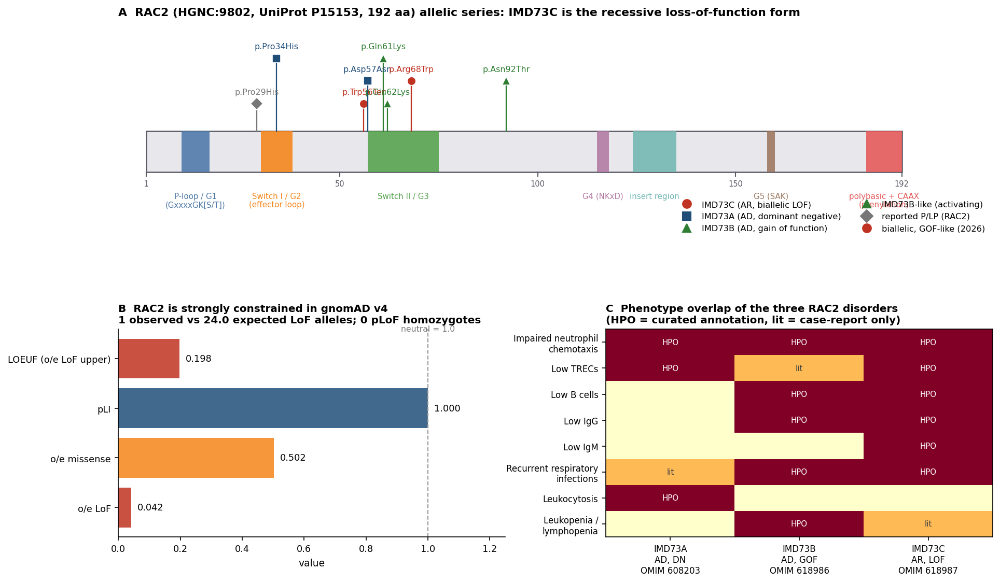
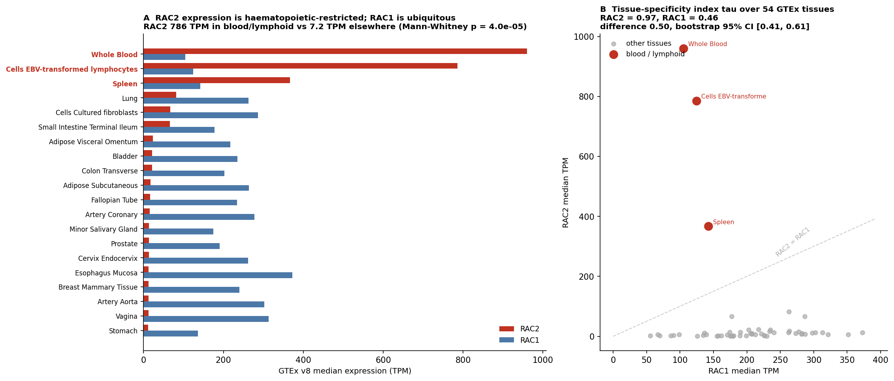

Immunodeficiency 73C
The autosomal recessive arm of RAC2 disease, caused by biallelic loss-of-function variants in RAC2, the haematopoietic-restricted Rho GTPase. It presents as a combined immunodeficiency with a phagocyte defect: recurrent respiratory infection, progressive hypogammaglobulinemia, B lymphopenia, reduced T cell receptor excision circles, and neutrophils that are both chemotactically defective and abnormally granulated. RAC2 disease is an allele-class spectrum in which the biochemistry of the variant, not the identity of the gene, predicts the syndrome, and this entry is the third of its three arms. Dominant-negative alleles cause the neonatal-onset neutrophil immunodeficiency syndrome and dominant-activating alleles cause a later combined immunodeficiency; both are curated separately. The index report draws the mechanistic distinction itself: a dominant-negative protein sequesters exchange factors and so impairs the GTPase activity of RAC1 as well as RAC2, whereas a clean recessive null removes RAC2 alone. That is why these patients, unlike the dominant-negative ones, had no catastrophic neonatal presentation and were instead labelled clinically as common variable immunodeficiency for years. The lesion is a single absence that branches three ways, because RAC2 sits at a three-module hub. Without membrane-targeted RAC2-GTP the NADPH oxidase is predicted not to assemble, since p67phox requires RacGTP binding to undergo the conformational change that engages NOX2 - although that prediction is not borne out in the one patient measurement available, a normal nitroblue tetrazolium test in the proband, and holds in only one of two neutrophil compartments in the null mouse. Without it the PAK and WAVE effectors are not engaged, so there is no polarised lamellipodium and no directed migration. And without it the lymphocyte guanine-nucleotide-exchange module has no downstream output, so T and B cell development and antibody production fail. The ubiquitous paralogue RAC1 does not compensate, because RAC2 supplies the great majority of Rac protein in the neutrophil. The clinical description rests on two siblings of one consanguineous family, homozygous for p.Trp56Ter, so every frequency in this entry would have a denominator of two and none is recorded. A second nonsense proband is included in ClinGen's curation, from a large exome series in a consanguineous population whose abstract carries no RAC2 phenotype detail.
Ask OpenScientist
Ask a research question about Immunodeficiency 73C. OpenScientist will conduct autonomous deep research using the Disorder Mechanisms Knowledge Base and PubMed literature (typically 10-30 minutes).
Do not include personal health information in your question. Questions and results are cached in your browser's local storage.
Classifications
Inheritance
1Show evidence (1 reference)
Pathophysiology
9Show evidence (1 reference)
Show evidence (1 reference)
Show evidence (3 references)
Show evidence (2 references)
Show evidence (1 reference)
Show evidence (1 reference)
Show evidence (1 reference)
Show evidence (1 reference)
Show evidence (1 reference)
Pathograph
Phenotypes
13Blood 6
Show evidence (1 reference)
Show evidence (1 reference)
Show evidence (2 references)
Show evidence (1 reference)
Show evidence (1 reference)
Show evidence (1 reference)
Cardiovascular 1
Show evidence (2 references)
Endocrine 3
Show evidence (1 reference)
Show evidence (1 reference)
Show evidence (1 reference)
Genitourinary 1
Show evidence (1 reference)
Immune 1
Show evidence (1 reference)
Respiratory 1
Show evidence (1 reference)
Genetic Associations
1Show evidence (2 references)
Variants (1)
Show evidence (2 references)
Medical Actions
3Show evidence (1 reference)
Show evidence (1 reference)
Show evidence (1 reference)
Diagnosis
1Show evidence (1 reference)
Differential Diagnoses
3Conditions with similar clinical presentations that must be differentiated from Immunodeficiency 73C:
Show evidence (1 reference)
Show evidence (1 reference)
Show evidence (1 reference)
Animal Models
1Show evidence (1 reference)
Show evidence (1 reference)
Source YAML
click to showname: Immunodeficiency 73C
creation_date: "2026-11-19T03:30:00Z"
category: Mendelian
synonyms:
- IMD73C
- immunodeficiency 73c with defective neutrophil chemotaxis and hypogammaglobulinemia
- RAC2 deficiency, autosomal recessive
- biallelic RAC2 loss-of-function immunodeficiency
description: >-
The autosomal recessive arm of RAC2 disease, caused by biallelic
loss-of-function variants in RAC2, the haematopoietic-restricted Rho GTPase.
It presents as a combined immunodeficiency with a phagocyte defect: recurrent
respiratory infection, progressive hypogammaglobulinemia, B lymphopenia,
reduced T cell receptor excision circles, and neutrophils that are both
chemotactically defective and abnormally granulated.
RAC2 disease is an allele-class spectrum in which the biochemistry of the
variant, not the identity of the gene, predicts the syndrome, and this entry
is the third of its three arms. Dominant-negative alleles cause the
neonatal-onset neutrophil immunodeficiency syndrome and dominant-activating
alleles cause a later combined immunodeficiency; both are curated separately.
The index report draws the mechanistic distinction itself: a dominant-negative
protein sequesters exchange factors and so impairs the GTPase activity of RAC1
as well as RAC2, whereas a clean recessive null removes RAC2 alone. That is
why these patients, unlike the dominant-negative ones, had no catastrophic
neonatal presentation and were instead labelled clinically as common variable
immunodeficiency for years.
The lesion is a single absence that branches three ways, because RAC2 sits at
a three-module hub. Without membrane-targeted RAC2-GTP the NADPH oxidase is
predicted not to assemble, since p67phox requires RacGTP binding to undergo
the conformational change that engages NOX2 - although that prediction is not
borne out in the one patient measurement available, a normal nitroblue
tetrazolium test in the proband, and holds in only one of two neutrophil
compartments in the null mouse. Without it the PAK and WAVE
effectors are not engaged, so there is no polarised lamellipodium and no
directed migration. And without it the lymphocyte guanine-nucleotide-exchange
module has no downstream output, so T and B cell development and antibody
production fail. The ubiquitous paralogue RAC1 does not compensate, because
RAC2 supplies the great majority of Rac protein in the neutrophil.
The clinical description rests on two siblings of one consanguineous family,
homozygous for p.Trp56Ter, so every frequency in this entry would have a
denominator of two and none is recorded. A second nonsense proband is
included in ClinGen's curation, from a large exome series in a consanguineous
population whose abstract carries no RAC2 phenotype detail.
disease_term:
preferred_term: immunodeficiency 73C with defective neutrophil chemotaxis and hypogammaglobulinemia
term:
id: MONDO:0033555
label: immunodeficiency 73c with defective neutrophil chemotaxis and hypogammaglobulinemia
parents:
- Inborn Error of Immunity
- Predominantly Antibody Deficiency
classifications:
harrisons_chapter:
- classification_value: IMMUNE_RHEUMATOLOGIC
notes: >-
A primary immunodeficiency combining an antibody deficiency with a
neutrophil functional defect.
- classification_value: GENETICS_ENVIRONMENT_DISEASE
notes: >-
A Mendelian single-gene disorder caused by biallelic loss-of-function
RAC2 alleles.
iuis_category:
classification_value: predominantly antibody deficiency
notes: >-
IUIS 2022 phenotypic classification (Tangye et al., PMID:35748970),
Table 3 "Predominantly antibody deficiencies", row "RAC2 deficiency
RAC2 AR 602049", associated features low IgG, IgA and IgM with low or
normal B cells and reduced antibody.
RAC2 is printed in three different IUIS 2022 tables as three distinct
diseases, and two of the three rows are both printed as "RAC2
deficiency", so the discriminator for this entry is the inheritance
column: this is the AR row in Table 3. The AD LOF row in Table 5
(Congenital defects of phagocyte number or function, MIM 608203) is
Neutrophil_Immunodeficiency_Syndrome, and the AD GOF row in Table 1 is
Immunodeficiency_73B.
notes: >-
Entry shape. This completes an allele-class split the knowledge base has
already made twice for this gene: Neutrophil_Immunodeficiency_Syndrome is the
dominant-negative arm and Immunodeficiency_73B the dominant-activating arm.
ClinGen records the same decision for RAC2, stating that it found differences
in molecular mechanism, inheritance pattern and phenotypic variability and
split the gene into three disease entities.
MONDO's placement of this term under MONDO:0017855, T-B- severe combined
immunodeficiency, does not fit the reported patients and is not reproduced in
this entry's parents. Both siblings had low but not absent B cells, survived
well beyond infancy, and were managed for years as common variable
immunodeficiency. The second MONDO parent, RAC2-related combined
immunodeficiency-bronchiectasis-cancer-predisposing syndrome, is a better
fit. This disagreement is a candidate MONDO term request rather than a
curation error here.
No GeneReviews chapter covers this disease or RAC2.
Every frequency in this entry would have a denominator of two, so none is
recorded. The HPO annotation of OMIM:618987 derives entirely from the same
two siblings. A second nonsense proband is counted in ClinGen's curation from
PMID:31130284, a large consanguineous-population exome series whose abstract
carries no RAC2 phenotype detail; it is not a second phenotyped patient.
The 54-patient international RAC2 cohort (PMID:38194689) reports 15 novel
missense alleles "including one present only in homozygosity". Its abstract
does not say which disease arm that allele belongs to, so whether it is a
recessive hypomorph belonging here or a homozygous gain-of-function allele is
unresolved and it is not counted toward this entry.
Content in the deep-research report that is the provider's own computation
rather than a published finding is not carried here as evidence: the GTEx
tissue-specificity index comparing RAC2 with RAC1, the gnomAD carrier
frequency and the derived birth-prevalence and consanguinity-multiplier
figures, the STRING partner tables, and a count of how many IMD73C features
the Rac2-null mouse matches against other inborn-error-of-immunity models.
The report's NCIT treatment bindings were largely wrong - its own term
validation flagged NCIT:C564, C265, C1322, C15417, C15632 and C15271 as
naming unrelated concepts - so every term here was re-derived from OLS.
`just preflight-dr` reported a gene-identifier mismatch, "HGNC:9802 beside
C3". It is a false positive: "C3" is part of RAC2's full name, Ras-related C3
botulinum toxin substrate 2, and hgnc:9802 is RAC2.
inheritance:
- name: Autosomal recessive
inheritance_term:
preferred_term: Autosomal recessive inheritance
term:
id: HP:0000007
label: Autosomal recessive inheritance
description: >-
Both reported patients are homozygous for a nonsense allele, born to
first-cousin parents; the mother is a heterozygous carrier and unaffected.
Consanguinity is the dominant family-level risk determinant for a disease
this rare.
evidence:
- reference: PMID:25512081
reference_title: "RAC2 loss-of-function mutation in 2 siblings with characteristics of common variable immunodeficiency."
supports: SUPPORT
evidence_source: HUMAN_CLINICAL
quote_role: PRIMARY_RESULT
snippet: "We report the first patients with a homozygous loss of function mutation in the RAC2 gene, presenting with clinical features of common variable immunodeficiency."
explanation: Establishes the homozygous loss-of-function genotype that defines this arm of RAC2 disease.
genetic:
- name: RAC2
variant_origin: GERMLINE
gene_term:
preferred_term: RAC2
term:
id: hgnc:9802
label: RAC2
relationship_type: CAUSATIVE
notes: >-
relationship_type overstates the evidence tier, deliberately and in line
with the rest of this knowledge base. The schema glosses CAUSATIVE as a
Definitive or Strong gene-disease relationship and ClinGen rates RAC2 for
this disease Moderate, on two nonsense variants in two probands from two
publications with supporting functional and model-organism work. RISK_FACTOR
would be worse than imprecise: the schema defines it for variants neither
necessary nor sufficient to cause disease, which is the opposite of a
biallelic null in a recessive Mendelian condition. The tier is copied from
ClinGen below and carries the caveat; `just check-gene-validity` reports
this as `overstated` and does not gate on it.
Two nonsense probands are reported. The clinical picture comes from the two
siblings homozygous for NM_002872.5:c.167G>A, p.Trp56Ter; ClinGen's
curation includes a second nonsense variant in a further proband from a
large consanguineous-population exome series (PMID:31130284), whose
abstract carries no RAC2 phenotype detail, so it adds a genotype rather
than a clinical description. The premature termination codon sits far enough upstream of the
final exon-exon junction for nonsense-mediated decay to be predicted, and
any escaping product would be 55 of 192 residues, lacking Switch II, the
guanine-contact motifs, the NADPH oxidase insert region and the CAAX
prenylation signal. Transfection of the patient allele produced no
detectable RAC2 protein.
gene_disease_validity:
- validity_classification: MODERATE
classified_by: CLINGEN
external_id: CGGV:assertion_8191c879-cc6a-4c5e-9ceb-7101aa7cbc15-2021-10-19T154613.500Z
evidence:
- reference: CGGV:assertion_8191c879-cc6a-4c5e-9ceb-7101aa7cbc15-2021-10-19T154613.500Z
reference_title: "RAC2 / immunodeficiency 73c with defective neutrophil chemotaxis and hypogammaglobulinemia (Moderate)"
supports: SUPPORT
evidence_source: OTHER
snippet: "RAC2 | HGNC:9802 | immunodeficiency 73c with defective neutrophil chemotaxis and hypogammaglobulinemia | MONDO:0033555 | AR | Moderate"
explanation: ClinGen Antibody Deficiencies GCEP classification for this MONDO entity.
evidence:
- reference: CGGV:assertion_8191c879-cc6a-4c5e-9ceb-7101aa7cbc15-2021-10-19T154613.500Z
reference_title: "RAC2 / immunodeficiency 73c with defective neutrophil chemotaxis and hypogammaglobulinemia (Moderate)"
supports: SUPPORT
evidence_source: OTHER
snippet: "Per criteria outlined by the ClinGen Lumping and Splitting Working Group, we found differences in the molecular mechanisms, inheritance pattern, and/or phenotypic variability."
explanation: >-
ClinGen's own splitting decision for RAC2, which is why this disease is a
separate entry from the two dominant arms rather than a subtype of one.
- reference: CGGV:assertion_8191c879-cc6a-4c5e-9ceb-7101aa7cbc15-2021-10-19T154613.500Z
reference_title: "RAC2 / immunodeficiency 73c with defective neutrophil chemotaxis and hypogammaglobulinemia (Moderate)"
supports: SUPPORT
evidence_source: OTHER
snippet: "Two variants (both nonsense) that have been reported in 2 unrelated probands in 2 publications (PMIDs: 25512081, 31130284) are included in this curation."
explanation: The genetic evidence base behind the Moderate tier.
variants:
- name: "RAC2 c.167G>A p.Trp56Ter"
clinical_significance: PATHOGENIC
description: >-
Homozygous nonsense allele in two siblings of a consanguineous Iranian
family, and the only IMD73C genotype with a published clinical
description. Transfection of the mutant produced no detectable RAC2
protein, so this is a molecular null rather than a hypomorph.
evidence:
- reference: PMID:25512081
reference_title: "RAC2 loss-of-function mutation in 2 siblings with characteristics of common variable immunodeficiency."
supports: SUPPORT
evidence_source: HUMAN_CLINICAL
quote_role: PRIMARY_RESULT
snippet: "A novel homozygous nonsense mutation in codon 56 (W56X) was identified in the RAC2 gene in the proband by whole exome sequencing (WES) analysis."
explanation: Identifies the allele.
- reference: PMID:25512081
reference_title: "RAC2 loss-of-function mutation in 2 siblings with characteristics of common variable immunodeficiency."
supports: SUPPORT
evidence_source: IN_VITRO
quote_role: PRIMARY_RESULT
snippet: "The expression of RAC2 was completely absent in cells transfected with the mutant identified in the patients"
explanation: Shows the allele produces no protein, which is what makes it a null.
pathophysiology:
- name: Biallelic RAC2 Null Alleles
biological_scale: MOLECULAR
description: >-
Two loss-of-function RAC2 alleles, leaving the cell with no functional RAC2.
RAC2 is haematopoietic-restricted, so this is a blood-compartment lesion in
an otherwise normal organism.
genetic_context:
variant_origin: GERMLINE
functional_impact_category: LOSS_OF_FUNCTION
zygosity: HOMOZYGOUS
genes:
- preferred_term: RAC2
term:
id: hgnc:9802
label: RAC2
evidence:
- reference: PMID:25512081
reference_title: "RAC2 loss-of-function mutation in 2 siblings with characteristics of common variable immunodeficiency."
supports: SUPPORT
evidence_source: HUMAN_CLINICAL
quote_role: PRIMARY_RESULT
snippet: "The affected gene encodes RAC2 (Ras-related C3 botulinum toxin substrate 2), a hematopoietic-specific member of the Rho family of guanosine triphosphatases (Rho GTPase) that are crucial regulators of cell signaling and actin cytoskeleton."
explanation: Identifies the gene product and its haematopoietic restriction.
downstream:
- target: Absence of RAC2 Protein Uncompensated by RAC1
causal_link_type: DIRECT
evidence:
- reference: PMID:25512081
reference_title: "RAC2 loss-of-function mutation in 2 siblings with characteristics of common variable immunodeficiency."
supports: SUPPORT
evidence_source: IN_VITRO
quote_role: PRIMARY_RESULT
snippet: "The expression of RAC2 was completely absent in cells transfected with the mutant identified in the patients"
explanation: The allele is shown to abolish protein expression, which is the step this edge asserts.
- name: Absence of RAC2 Protein Uncompensated by RAC1
biological_scale: MOLECULAR
description: >-
No RAC2 protein in haematopoietic cells. The co-expressed ubiquitous
paralogue RAC1 does not substitute, because RAC2 supplies the great
majority of the Rac pool in the neutrophil. This is also the point at which
the recessive null differs from the dominant-negative allele, which impairs
RAC1 as well and so produces a more severe neonatal disease.
genes:
- preferred_term: RAC2
term:
id: hgnc:9802
label: RAC2
molecular_functions:
- preferred_term: RAC2 GTPase activity
modifier: DECREASED
term:
id: GO:0003924
label: GTPase activity
evidence:
- reference: PMID:25512081
reference_title: "RAC2 loss-of-function mutation in 2 siblings with characteristics of common variable immunodeficiency."
supports: SUPPORT
evidence_source: HUMAN_CLINICAL
directness: INDIRECT
quote_role: PRIMARY_RESULT
snippet: "This may be explained by the fact that the previously reported cases involved expression of a DN protein, which affected the GTPase activity not only of RAC2, but also of RAC1, the other major RAC GTPase expressed in human neutrophils"
explanation: >-
The authors' own contrast between the dominant-negative and the null,
which is what separates this disease from the other two RAC2 arms. That
RAC1 fails to compensate in these patients' cells is inferred from it
rather than measured.
downstream:
- target: Failure of NADPH Oxidase Assembly
causal_link_type: DIRECT
evidence:
- reference: PMID:24598074
reference_title: "Role of the Rho GTPase Rac in the activation of the phagocyte NADPH oxidase: outsourcing a key task."
supports: SUPPORT
evidence_source: IN_VITRO
quote_role: PRIMARY_RESULT
snippet: "(4) Binding of RacGTP to p67(phox); (5) Induction of a conformational change in p67(phox), promoting interaction with Nox2"
explanation: >-
The two consecutive steps of the canonical oxidase sequence that absent
RAC2-GTP removes, quoted together so the conformational change this
node's description names is in the quote.
- target: Failure of Lamellipodium Formation and Directed Migration
causal_link_type: DIRECT
evidence:
- reference: PMID:30723080
reference_title: "Dominant activating RAC2 mutation with lymphopenia, immunodeficiency, and cytoskeletal defects."
supports: SUPPORT
evidence_source: IN_VITRO
quote_role: PRIMARY_RESULT
snippet: "RAC2, through interactions with reduced NAD phosphate oxidase component p67 phox, activates neutrophil superoxide production, whereas interactions with p21-activated kinase are necessary for fMLF-induced actin remodeling."
explanation: >-
States the two-effector split directly: the oxidase branch runs through
p67phox and the migration branch through p21-activated kinase.
- target: Loss of Rac-Dependent Lymphocyte Signalling Output
causal_link_type: DIRECT
- name: Failure of NADPH Oxidase Assembly
biological_scale: CELLULAR
description: >-
The mechanism predicts this step: p67phox requires RacGTP binding to
undergo the conformational change that lets it engage NOX2, so without
membrane-targeted RAC2-GTP the oxidase should not assemble.
How far it is realised in a patient is not settled, and the evidence points
both ways. The proband's nitroblue tetrazolium test was normal, which is a
direct human measurement against a complete oxidative-burst failure. In the
null mouse the result is compartment-dependent: superoxide production was
significantly reduced in bone-marrow neutrophils but normal in activated
peritoneal exudate neutrophils. So a reduced respiratory burst is expected
from the biochemistry and partly seen in the mouse, rather than
demonstrated in these patients.
biological_processes:
- preferred_term: superoxide anion generation
modifier: DECREASED
term:
id: GO:0042554
label: superoxide anion generation
cell_types:
- preferred_term: neutrophil
term:
id: CL:0000775
label: neutrophil
evidence:
- reference: PMID:30723080
reference_title: "Dominant activating RAC2 mutation with lymphopenia, immunodeficiency, and cytoskeletal defects."
supports: SUPPORT
evidence_source: IN_VITRO
quote_role: PRIMARY_RESULT
snippet: "RAC2, through interactions with reduced NAD phosphate oxidase component p67 phox, activates neutrophil superoxide production"
explanation: The oxidase branch of RAC2's effector repertoire.
- reference: PMID:25512081
reference_title: "RAC2 loss-of-function mutation in 2 siblings with characteristics of common variable immunodeficiency."
supports: REFUTE
evidence_source: HUMAN_CLINICAL
quote_role: PRIMARY_RESULT
snippet: "Her neutrophil markers and the nitrobluetetrazolium (NBT) test were normal"
explanation: >-
The only oxidative-burst measurement in an IMD73C patient, and it was
normal. Recorded as REFUTE because it contradicts a complete failure of
oxidase assembly, which is what the mechanism predicts.
- reference: PMID:10072071
reference_title: "Deficiency of the hematopoietic cell-specific Rho family GTPase Rac2 is characterized by abnormalities in neutrophil function and host defense."
supports: SUPPORT
evidence_source: MODEL_ORGANISM
directness: INDIRECT
quote_role: PRIMARY_RESULT
snippet: "Superoxide production by rac2-/- bone marrow neutrophils was significantly reduced compared to wild type, but it was normal in activated peritoneal exudate neutrophils."
explanation: >-
The null mouse reduces superoxide in one neutrophil compartment and not
in another, which is why this node is described as partly realised rather
than as an abolished burst.
downstream:
- target: Neutrophil Effector Failure
causal_link_type: DIRECT
- name: Failure of Lamellipodium Formation and Directed Migration
biological_scale: CELLULAR
description: >-
Without RAC2 engagement of the PAK kinases and the WAVE regulatory complex
there is no polarised lamellipodial F-actin, so the neutrophil cannot
migrate up a chemoattractant gradient or capture on endothelium under
shear. A chemotactic defect was measured directly in one of the two
patients.
biological_processes:
- preferred_term: positive regulation of neutrophil chemotaxis
modifier: DECREASED
term:
id: GO:0090023
label: positive regulation of neutrophil chemotaxis
cell_types:
- preferred_term: neutrophil
term:
id: CL:0000775
label: neutrophil
evidence:
- reference: PMID:25512081
reference_title: "RAC2 loss-of-function mutation in 2 siblings with characteristics of common variable immunodeficiency."
supports: SUPPORT
evidence_source: HUMAN_CLINICAL
quote_role: PRIMARY_RESULT
snippet: "Finally a chemotactic defect was observed in the neutrophils derived from the affected brother"
explanation: The chemotactic defect measured in patient neutrophils.
- reference: PMID:10072071
reference_title: "Deficiency of the hematopoietic cell-specific Rho family GTPase Rac2 is characterized by abnormalities in neutrophil function and host defense."
supports: SUPPORT
evidence_source: MODEL_ORGANISM
quote_role: PRIMARY_RESULT
snippet: "rac2-/- neutrophils displayed significant defects in chemotaxis, in shear-dependent L-selectin-mediated capture on the endothelial substrate Glycam-1, and in both F-actin generation and p38 and, unexpectedly, p42/p44 MAP kinase activation induced by chemoattractants"
explanation: The same defect dissected in the null mouse, including the F-actin and capture components.
downstream:
- target: Neutrophil Effector Failure
causal_link_type: DIRECT
- name: Abnormal Neutrophil Granule Formation
biological_scale: CELLULAR
description: >-
Primary and secondary granule numbers per unit cytoplasm are significantly
reduced in patient neutrophils, with altered secondary granule shape. This
is a third cellular consequence alongside the oxidase and migration
branches, and its mechanism is not established.
cell_types:
- preferred_term: neutrophil
term:
id: CL:0000775
label: neutrophil
evidence:
- reference: PMID:25512081
reference_title: "RAC2 loss-of-function mutation in 2 siblings with characteristics of common variable immunodeficiency."
supports: SUPPORT
evidence_source: HUMAN_CLINICAL
quote_role: PRIMARY_RESULT
snippet: "The number of primary (azurophilic) and secondary (specific) granules per μm2 of cytoplasm were significantly reduced in the proband"
explanation: The granule abnormality measured by electron microscopy in the proband.
downstream:
- target: Neutrophil Effector Failure
causal_link_type: INDIRECT_UNKNOWN_INTERMEDIATES
- name: Loss of Rac-Dependent Lymphocyte Signalling Output
biological_scale: CELLULAR
description: >-
RAC2 is the downstream effector of the lymphocyte
guanine-nucleotide-exchange module, so antigen-receptor,
chemokine-receptor and integrin signals lose their Rac-dependent
cytoskeletal and transcriptional output.
Thymocyte development and B cell development both suffer, which is read out
in the patients as reduced T cell receptor excision circles and reduced
kappa-deleting recombination excision circles.
cell_types:
- preferred_term: T cell
term:
id: CL:0000084
label: T cell
- preferred_term: B cell
term:
id: CL:0000236
label: B cell
evidence:
- reference: PMID:25512081
reference_title: "RAC2 loss-of-function mutation in 2 siblings with characteristics of common variable immunodeficiency."
supports: SUPPORT
evidence_source: HUMAN_CLINICAL
quote_role: PRIMARY_RESULT
snippet: "we did observe a reduced number of TRECs and kappa-deleting recombination excision circles (KRECs) in the patients' peripheral blood as compared to age-matched controls"
explanation: >-
Reduced excision circles in both lineages, which is the measurable
consequence of impaired T and B cell development.
downstream:
- target: Progressive Antibody Deficiency
causal_link_type: DIRECT
- target: Decreased circulating IgA concentration
causal_link_type: DIRECT
- target: Abnormally low T cell receptor excision circle level
causal_link_type: DIRECT
- target: Decreased total B cell count
causal_link_type: DIRECT
- target: Immune Dysregulation
causal_link_type: INDIRECT_UNKNOWN_INTERMEDIATES
- name: Neutrophil Effector Failure
biological_scale: ORGANISM
description: >-
A neutrophil that does not reach the site of infection, and whose killing
capacity is predicted to be reduced without being demonstrated in these
patients: the migration defect was measured directly, while the proband's
oxidative burst tested normal by NBT. Unlike the dominant-negative arm of
RAC2 disease, this does not present catastrophically in the neonatal
period.
evidence:
- reference: PMID:25512081
reference_title: "RAC2 loss-of-function mutation in 2 siblings with characteristics of common variable immunodeficiency."
supports: SUPPORT
evidence_source: HUMAN_CLINICAL
directness: INDIRECT
quote_role: PRIMARY_RESULT
snippet: "Finally a chemotactic defect was observed in the neutrophils derived from the affected brother"
explanation: >-
The measured functional defect. That it is what drives the clinical
infection burden is an inference from the two branches above.
downstream:
- target: Recurrent respiratory infections
causal_link_type: DIRECT
- name: Progressive Antibody Deficiency
biological_scale: ORGANISM
description: >-
Hypogammaglobulinemia that worsens over childhood, which is what led to
both siblings being diagnosed and treated as common variable
immunodeficiency before the genetic cause was found. The progressive course
distinguishes this arm, where the dominant-negative patients were
transplanted in infancy before any such course could be observed.
evidence:
- reference: PMID:25512081
reference_title: "RAC2 loss-of-function mutation in 2 siblings with characteristics of common variable immunodeficiency."
supports: SUPPORT
evidence_source: HUMAN_CLINICAL
quote_role: PRIMARY_RESULT
snippet: "We describe here, for the first time, a homozygous loss of function RAC2 mutation in two patients with early onset and progressive hypogammaglobulinemia."
explanation: The progressive antibody deficiency, stated as the defining clinical feature of this arm.
downstream:
- target: Decreased circulating IgG concentration
causal_link_type: DIRECT
- target: Decreased circulating IgM concentration
causal_link_type: DIRECT
- target: Recurrent respiratory infections
causal_link_type: DIRECT
- name: Immune Dysregulation
biological_scale: ORGANISM
description: >-
Glomerulonephritis, factor XI deficiency, urticaria and multiple hormone
abnormalities of possible autoimmune basis were present in both siblings.
Both glomerulonephritides were post-streptococcal with a raised
anti-streptolysin O titre, and the original authors suggest they may be
secondary to the infection burden rather than to the genotype; a sequela
edge from the recurrent infections records that alternative route. This is
the least supported step in the chain: no mechanistic study connects RAC2 loss to
renal, coagulation or endocrine pathology, the Rac2-null mouse does not
reproduce it, and the original authors themselves suggest some of these
features may be secondary to infection or autoimmunity rather than directly
attributable.
evidence:
- reference: PMID:25512081
reference_title: "RAC2 loss-of-function mutation in 2 siblings with characteristics of common variable immunodeficiency."
supports: SUPPORT
evidence_source: HUMAN_CLINICAL
directness: INDIRECT
quote_role: PRIMARY_RESULT
snippet: "In addition, the patients suffered from glomerulonephritis, coagulopathy, multiple hormone deficiencies potentially on the autoimmune basis and abnormalities of neutrophil granules."
explanation: >-
Reports the features in both patients. The authors' own "potentially"
marks the attribution as unsettled, and no mechanism links them to RAC2.
downstream:
- target: Glomerulonephritis
causal_link_type: INDIRECT_UNKNOWN_INTERMEDIATES
- target: Hypothyroidism
causal_link_type: INDIRECT_UNKNOWN_INTERMEDIATES
- target: Hyperparathyroidism
causal_link_type: INDIRECT_UNKNOWN_INTERMEDIATES
- target: Decreased response to growth hormone stimulation test
causal_link_type: INDIRECT_UNKNOWN_INTERMEDIATES
- target: Reduced factor XI activity
causal_link_type: INDIRECT_UNKNOWN_INTERMEDIATES
- target: Urticaria
causal_link_type: INDIRECT_UNKNOWN_INTERMEDIATES
phenotypes:
- category: Immunologic
name: Recurrent respiratory infections
description: >-
The presenting clinical feature in both siblings, from six months and two
years of age respectively, progressing to bronchiectasis in both.
phenotype_term:
preferred_term: Recurrent respiratory infections
term:
id: HP:0002205
label: Recurrent respiratory infections
evidence:
- reference: PMID:25512081
reference_title: "RAC2 loss-of-function mutation in 2 siblings with characteristics of common variable immunodeficiency."
supports: SUPPORT
evidence_source: HUMAN_CLINICAL
quote_role: PRIMARY_RESULT
snippet: "presented at 6 months of age with recurrent pneumonia"
explanation: The proband's presenting infection history.
sequelae:
- target: Bronchiectasis
description: Repeated sinopulmonary infection produced bronchiectasis in both siblings.
evidence:
- reference: PMID:25512081
reference_title: "RAC2 loss-of-function mutation in 2 siblings with characteristics of common variable immunodeficiency."
supports: SUPPORT
evidence_source: HUMAN_CLINICAL
quote_role: PRIMARY_RESULT
snippet: "arthralgia, bronchiectasis, hypothyroidism with anti-TPO autoantibodies and hyperparathyroidism"
explanation: Bronchiectasis among the proband's accumulated morbidities.
- target: Glomerulonephritis
description: >-
Both siblings' glomerulonephritis was post-streptococcal, with a raised
anti-streptolysin O titre. The original authors suggest it may be
secondary to the infection burden rather than attributable to RAC2 loss,
so this edge records the infection route alongside the
immune-dysregulation one.
evidence:
- reference: PMID:25512081
reference_title: "RAC2 loss-of-function mutation in 2 siblings with characteristics of common variable immunodeficiency."
supports: SUPPORT
evidence_source: HUMAN_CLINICAL
directness: INDIRECT
quote_role: PRIMARY_RESULT
snippet: "these phenotypes might be secondary to the overall increased susceptibility to infections (especially for PSGN) and/or autoimmunity in our patients"
explanation: >-
The authors' own suggestion that the glomerulonephritis is secondary to
infection, offered as a possibility rather than demonstrated.
- category: Respiratory
name: Bronchiectasis
description: >-
Irreversible airway dilatation from recurrent sinopulmonary infection,
present in both siblings and the main preventable morbidity.
phenotype_term:
preferred_term: Bronchiectasis
term:
id: HP:0002110
label: Bronchiectasis
evidence:
- reference: PMID:25512081
reference_title: "RAC2 loss-of-function mutation in 2 siblings with characteristics of common variable immunodeficiency."
supports: SUPPORT
evidence_source: HUMAN_CLINICAL
quote_role: PRIMARY_RESULT
snippet: "arthralgia, bronchiectasis, hypothyroidism with anti-TPO autoantibodies and hyperparathyroidism"
explanation: Bronchiectasis reported in the proband.
- category: Immunologic
name: Decreased circulating IgG concentration
description: >-
Progressive IgG deficiency. In the proband IgG fell to 430 mg/dL by seven
years of age, which is when intravenous immunoglobulin replacement was
started.
phenotype_term:
preferred_term: Decreased circulating IgG concentration
term:
id: HP:0004315
label: Decreased circulating IgG concentration
evidence:
- reference: PMID:25512081
reference_title: "RAC2 loss-of-function mutation in 2 siblings with characteristics of common variable immunodeficiency."
supports: SUPPORT
evidence_source: HUMAN_CLINICAL
quote_role: PRIMARY_RESULT
snippet: "We describe here, for the first time, a homozygous loss of function RAC2 mutation in two patients with early onset and progressive hypogammaglobulinemia."
explanation: The progressive hypogammaglobulinemia in both patients.
- category: Immunologic
name: Decreased circulating IgM concentration
description: Reduced serum IgM, reported in the affected brother alongside the IgG deficiency.
phenotype_term:
preferred_term: Decreased circulating IgM concentration
term:
id: HP:0002850
label: Decreased circulating total IgM
evidence:
- reference: PMID:25512081
reference_title: "RAC2 loss-of-function mutation in 2 siblings with characteristics of common variable immunodeficiency."
supports: SUPPORT
evidence_source: HUMAN_CLINICAL
quote_role: PRIMARY_RESULT
snippet: "His IgM and IgG serum levels were also reduced at this age"
explanation: Reduced IgM and IgG in the affected brother.
- category: Immunologic
name: Decreased circulating IgA concentration
description: >-
Selective IgA deficiency was the first antibody diagnosis in both siblings,
before the IgG and IgM fell: the proband's serum IgA was undetectable in
infancy and her brother was labelled SIgAD at seven years old. It is the
earliest humoral finding of the disease.
phenotype_term:
preferred_term: Decreased circulating IgA concentration
term:
id: HP:0002720
label: Decreased circulating IgA concentration
evidence:
- reference: PMID:25512081
reference_title: "RAC2 loss-of-function mutation in 2 siblings with characteristics of common variable immunodeficiency."
supports: SUPPORT
evidence_source: HUMAN_CLINICAL
quote_role: PRIMARY_RESULT
snippet: "a diagnosis of post-streptococcal glomerulonephritis (PSGN) was made along with a tentative diagnosis of selective IgA deficiency (SIgAD)"
explanation: >-
The IgA deficiency diagnosed in the proband in infancy.
- reference: PMID:25512081
reference_title: "RAC2 loss-of-function mutation in 2 siblings with characteristics of common variable immunodeficiency."
supports: SUPPORT
evidence_source: HUMAN_CLINICAL
quote_role: PRIMARY_RESULT
snippet: "Urticaria and sinusitis occurred at age 7 years when SIgAD was diagnosed with normal T- and B-cell percentages in peripheral blood"
explanation: >-
The same diagnosis in the affected brother.
- category: Hematologic
name: Reduced factor XI activity
description: >-
Coagulation factor XI deficiency with activity below 1% in both siblings, at
two and ten years of age. F11 was sequenced and excluded in the proband, so
this is not a second independent Mendelian condition segregating in the
family. How RAC2 loss produces it is unknown, and the original authors place
it among the features that may not be directly attributable.
phenotype_term:
preferred_term: Coagulation factor XI deficiency
term:
id: HP:0001929
label: Reduced factor XI activity
evidence:
- reference: PMID:25512081
reference_title: "RAC2 loss-of-function mutation in 2 siblings with characteristics of common variable immunodeficiency."
supports: SUPPORT
evidence_source: HUMAN_CLINICAL
quote_role: PRIMARY_RESULT
snippet: "Coagulation factor XI deficiency (activity <1%) was diagnosed at 2 years of age."
explanation: >-
The factor XI deficiency in the proband, with its measured activity.
- category: Dermatologic
name: Urticaria
description: >-
Urticaria in both siblings, sunlight-induced in the proband and accompanied
by recurrent erythematous plaques and food allergy. The original authors
link it to the mast-cell defect seen in Rac2-deficient bone-marrow-derived
mast cells, which would make it a direct consequence of the lesion rather
than a secondary autoimmune feature.
phenotype_term:
preferred_term: Urticaria
term:
id: HP:0001025
label: Urticaria
evidence:
- reference: PMID:25512081
reference_title: "RAC2 loss-of-function mutation in 2 siblings with characteristics of common variable immunodeficiency."
supports: SUPPORT
evidence_source: HUMAN_CLINICAL
quote_role: PRIMARY_RESULT
snippet: "Dermatological features developed three years later, including urticaria (induced by exposure to sunlight), recurrent erythematous plaques and food allergy, requiring corticosteroid therapy."
explanation: >-
The urticaria and associated allergic features in the proband.
- reference: PMID:25512081
reference_title: "RAC2 loss-of-function mutation in 2 siblings with characteristics of common variable immunodeficiency."
supports: SUPPORT
evidence_source: HUMAN_CLINICAL
directness: INDIRECT
quote_role: PRIMARY_RESULT
snippet: "The urticaria in our patients may be further related to the mast cell defects as observed in Rac2"
explanation: >-
The authors' proposed mechanism, offered as a possibility rather than demonstrated.
- category: Endocrine
name: Hyperparathyroidism
description: >-
Hyperparathyroidism in the proband, one of the hormone abnormalities the
original report groups as potentially autoimmune.
phenotype_term:
preferred_term: Hyperparathyroidism
term:
id: HP:0000843
label: Hyperparathyroidism
evidence:
- reference: PMID:25512081
reference_title: "RAC2 loss-of-function mutation in 2 siblings with characteristics of common variable immunodeficiency."
supports: SUPPORT
evidence_source: HUMAN_CLINICAL
quote_role: PRIMARY_RESULT
snippet: "arthralgia, bronchiectasis, hypothyroidism with anti-TPO autoantibodies and hyperparathyroidism"
explanation: >-
Hyperparathyroidism among the proband's accumulated morbidities.
- category: Endocrine
name: Decreased response to growth hormone stimulation test
description: >-
Growth hormone deficiency in the affected brother, diagnosed between ten and
sixteen years of age. The HPO term names the stimulation-test result rather
than the deficiency itself, which is the closest available binding.
phenotype_term:
preferred_term: Growth hormone deficiency
term:
id: HP:0000824
label: Decreased response to growth hormone stimulation test
evidence:
- reference: PMID:25512081
reference_title: "RAC2 loss-of-function mutation in 2 siblings with characteristics of common variable immunodeficiency."
supports: SUPPORT
evidence_source: HUMAN_CLINICAL
quote_role: PRIMARY_RESULT
snippet: "bronchiectasis, hypothyroidism with anti-TPO antibodies and growth hormone deficiency"
explanation: >-
Growth hormone deficiency in the affected brother.
- category: Immunologic
name: Decreased total B cell count
description: >-
B lymphopenia, severe in the affected brother on extended immunophenotyping
and present from the first year of life in the proband.
phenotype_term:
preferred_term: Decreased total B cell count
term:
id: HP:0010976
label: Decreased total B cell count
evidence:
- reference: PMID:25512081
reference_title: "RAC2 loss-of-function mutation in 2 siblings with characteristics of common variable immunodeficiency."
supports: SUPPORT
evidence_source: HUMAN_CLINICAL
quote_role: PRIMARY_RESULT
snippet: "A recent extended lymphocyte immunophenotyping showed severe B-lymphopenia and abnormalities in T-cell subpopulations"
explanation: The B lymphopenia measured in the affected brother.
- category: Immunologic
name: Abnormally low T cell receptor excision circle level
description: >-
Reduced TRECs, together with reduced kappa-deleting recombination excision
circles, indicating impaired output of both lymphocyte lineages from their
primary organs rather than peripheral loss alone.
phenotype_term:
preferred_term: Abnormally low T cell receptor excision circle level
term:
id: HP:0031545
label: Abnormally low T cell receptor excision circle level
evidence:
- reference: PMID:25512081
reference_title: "RAC2 loss-of-function mutation in 2 siblings with characteristics of common variable immunodeficiency."
supports: SUPPORT
evidence_source: HUMAN_CLINICAL
quote_role: PRIMARY_RESULT
snippet: "we did observe a reduced number of TRECs and kappa-deleting recombination excision circles (KRECs) in the patients' peripheral blood as compared to age-matched controls"
explanation: Reduced TRECs and KRECs measured in both patients.
- category: Renal
name: Glomerulonephritis
description: >-
Both siblings developed post-streptococcal glomerulonephritis, diagnosed on
the clinical picture with a raised anti-streptolysin O titre. In the proband
it progressed to end-stage renal disease requiring transplantation, and she
died of graft rejection at 21. Whether it is attributable to RAC2 loss or is
a consequence of the infection burden is unresolved, and the original
authors favour the latter; both routes are recorded as edges.
phenotype_term:
preferred_term: Glomerulonephritis
term:
id: HP:0000099
label: Glomerulonephritis
evidence:
- reference: PMID:25512081
reference_title: "RAC2 loss-of-function mutation in 2 siblings with characteristics of common variable immunodeficiency."
supports: SUPPORT
evidence_source: HUMAN_CLINICAL
quote_role: PRIMARY_RESULT
snippet: "In addition, the patients suffered from glomerulonephritis, coagulopathy, multiple hormone deficiencies potentially on the autoimmune basis and abnormalities of neutrophil granules."
explanation: Glomerulonephritis reported in both patients.
- category: Endocrine
name: Hypothyroidism
description: >-
Autoimmune hypothyroidism with anti-thyroid peroxidase antibodies in both
siblings, part of the multiple hormone deficiencies the original report
describes as potentially autoimmune.
phenotype_term:
preferred_term: Hypothyroidism
term:
id: HP:0000821
label: Hypothyroidism
evidence:
- reference: PMID:25512081
reference_title: "RAC2 loss-of-function mutation in 2 siblings with characteristics of common variable immunodeficiency."
supports: SUPPORT
evidence_source: HUMAN_CLINICAL
quote_role: PRIMARY_RESULT
snippet: "Other morbidities in the following years included arthralgia, bronchiectasis, hypothyroidism with anti-TPO autoantibodies and hyperparathyroidism"
explanation: Autoimmune hypothyroidism in the proband.
diagnosis:
- name: Neutrophil function testing with sequencing
description: >-
The disease is reached by sequencing, because its clinical picture is that
of common variable immunodeficiency and both patients carried that label
for years. What distinguishes it once suspected is the neutrophil: a
chemotaxis assay and electron microscopy of granule morphology are
abnormal, while the nitroblue tetrazolium test was normal in the proband,
so a normal oxidative-burst screen does not exclude it.
evidence:
- reference: PMID:25512081
reference_title: "RAC2 loss-of-function mutation in 2 siblings with characteristics of common variable immunodeficiency."
supports: SUPPORT
evidence_source: HUMAN_CLINICAL
quote_role: PRIMARY_RESULT
snippet: "Her neutrophil markers and the nitrobluetetrazolium (NBT) test were normal"
explanation: >-
A normal NBT in the proband, which is why an oxidative-burst screen alone
does not exclude this disease.
treatments:
- name: Immunoglobulin Replacement
description: >-
Replacement immunoglobulin for the progressive antibody deficiency, which
is what both siblings received once hypogammaglobulinemia was recognised.
It addresses the humoral arm only; the neutrophil defect is untouched.
therapeutic_modality: PROTEIN_REPLACEMENT
treatment_term:
preferred_term: immunoglobulin replacement therapy
term:
id: NCIT:C15986
label: Pharmacotherapy
therapeutic_agent:
- preferred_term: human immunoglobulin G
term:
id: NCIT:C80829
label: Human Immunoglobulin G
evidence:
- reference: PMID:25512081
reference_title: "RAC2 loss-of-function mutation in 2 siblings with characteristics of common variable immunodeficiency."
supports: SUPPORT
evidence_source: HUMAN_CLINICAL
quote_role: PRIMARY_RESULT
snippet: "a diagnosis of CVID was made and intravenous immunoglobulin (IVIG) treatment was initiated"
explanation: Immunoglobulin replacement as actually given to the proband.
target_mechanisms:
- target: Progressive Antibody Deficiency
description: Substitutes for antibody the patient cannot make; it does not restore B cell development.
- name: Antimicrobial Prophylaxis
description: >-
Antibacterial prophylaxis against the recurrent sinopulmonary infection
that produced bronchiectasis in both siblings. No prophylaxis regimen has
been tested in this disease; the practice is extrapolated from phagocyte
oxidative defects, where trimethoprim-sulfamethoxazole is standard.
therapeutic_modality: SMALL_MOLECULE
treatment_term:
preferred_term: antibacterial prophylaxis
term:
id: NCIT:C15620
label: Antibiotic Therapy
therapeutic_agent:
- preferred_term: trimethoprim-sulfamethoxazole
term:
id: NCIT:C909
label: Trimethoprim-Sulfamethoxazole
evidence:
- reference: PMID:25512081
reference_title: "RAC2 loss-of-function mutation in 2 siblings with characteristics of common variable immunodeficiency."
supports: SUPPORT
evidence_source: HUMAN_CLINICAL
directness: INDIRECT
quote_role: PRIMARY_RESULT
snippet: "presented at 6 months of age with recurrent pneumonia"
explanation: >-
Establishes the recurrent infection burden this prophylaxis is intended
to reduce. No prophylaxis trial exists in this disease.
target_mechanisms:
- target: Neutrophil Effector Failure
description: Reduces pathogen burden rather than restoring neutrophil function.
- name: Thyroid Hormone Replacement
description: >-
Levothyroxine for the autoimmune hypothyroidism documented in both siblings
with anti-thyroid-peroxidase antibodies. It treats one of the endocrine
consequences rather than the immunodeficiency, and is here because the
hormone abnormalities are part of this disease's described phenotype and
are the kind of thing that goes unlooked-for in a patient being managed as
an antibody deficiency.
therapeutic_modality: SMALL_MOLECULE
treatment_term:
preferred_term: thyroid hormone replacement
term:
id: NCIT:C15599
label: Hormone Replacement Therapy
therapeutic_agent:
- preferred_term: levothyroxine
term:
id: NCIT:C62080
label: Levothyroxine
evidence:
- reference: PMID:25512081
reference_title: "RAC2 loss-of-function mutation in 2 siblings with characteristics of common variable immunodeficiency."
supports: SUPPORT
evidence_source: HUMAN_CLINICAL
directness: INDIRECT
quote_role: PRIMARY_RESULT
snippet: "arthralgia, bronchiectasis, hypothyroidism with anti-TPO autoantibodies and hyperparathyroidism"
explanation: >-
Establishes the autoimmune hypothyroidism this treatment addresses. No
treatment of it is described in this disease specifically; the practice is
standard endocrine management.
target_mechanisms:
- target: Hypothyroidism
description: Replaces the deficient hormone; it does not act on the immune lesion.
animal_models:
- name: Rac2-null mouse
species: Mouse
genotype: Rac2 homozygous null
publication: PMID:10072071
genes:
- preferred_term: Rac2
term:
id: MGI:97846
label: Rac2
description: >-
The genotype matches the human disease: a constitutional biallelic null in
a haematopoietic-restricted gene. It dissects the migration branch in
detail, separating chemotaxis, shear-dependent capture and F-actin
generation, and shows that the baseline defect becomes lethal only on
pathogen challenge.
modeled_mechanisms:
- target: Failure of Lamellipodium Formation and Directed Migration
relationship: RECAPITULATES
fidelity: HIGH
model_scale: CELLULAR
description: >-
Chemotaxis, L-selectin-mediated capture under shear and F-actin
generation are all defective, which is a finer dissection of this node
than the single chemotaxis assay available in the patients.
limitations: >-
The mouse does not reproduce the glomerulonephritis, coagulopathy or
endocrine features of the human siblings, so the immune-dysregulation arm
of the disease has no counterpart in it.
divergences:
- divergence_type: INCOMPLETE_PHENOTYPE
materiality: QUALIFYING
description: >-
The renal, coagulation and endocrine features reported in both human
patients are absent from this model. That is part of why their
attribution to RAC2 loss remains unresolved.
evidence:
- reference: PMID:10072071
reference_title: "Deficiency of the hematopoietic cell-specific Rho family GTPase Rac2 is characterized by abnormalities in neutrophil function and host defense."
supports: SUPPORT
evidence_source: MODEL_ORGANISM
quote_role: PRIMARY_RESULT
snippet: "rac2-/- neutrophils displayed significant defects in chemotaxis, in shear-dependent L-selectin-mediated capture on the endothelial substrate Glycam-1, and in both F-actin generation and p38 and, unexpectedly, p42/p44 MAP kinase activation induced by chemoattractants"
explanation: The dissected migration defect measured in the null mouse.
readouts:
- name: Neutrophil chemotaxis and shear-dependent capture
target: Failure of Lamellipodium Formation and Directed Migration
direction: DECREASED
interpretation: Direct cellular correlate of the node, in the matching genotype.
evidence:
- reference: PMID:10072071
reference_title: "Deficiency of the hematopoietic cell-specific Rho family GTPase Rac2 is characterized by abnormalities in neutrophil function and host defense."
supports: SUPPORT
evidence_source: MODEL_ORGANISM
quote_role: PRIMARY_RESULT
snippet: "rac2-/- neutrophils displayed significant defects in chemotaxis"
explanation: The measured chemotactic defect behind this readout.
differential_diagnoses:
- name: Common variable immunodeficiency
description: >-
The label both siblings carried for years, and the differential this
disease is most likely to hide behind. Hypogammaglobulinemia, B lymphopenia
and recurrent sinopulmonary infection with bronchiectasis are shared; what
separates them is the neutrophil chemotaxis defect and the abnormal granule
morphology, neither of which is sought in a routine CVID workup.
evidence:
- reference: PMID:25512081
reference_title: "RAC2 loss-of-function mutation in 2 siblings with characteristics of common variable immunodeficiency."
supports: SUPPORT
evidence_source: HUMAN_CLINICAL
quote_role: PRIMARY_RESULT
snippet: "We report the first patients with a homozygous loss of function mutation in the RAC2 gene, presenting with clinical features of common variable immunodeficiency."
explanation: The CVID presentation, stated in the report's own opening sentence.
- name: Neutrophil Immunodeficiency Syndrome
description: >-
The dominant-negative arm of RAC2 disease, caused by the p.Asp57Asn allele.
It presents in the neonatal period with severe soft-tissue infection and
absent pus, because a dominant-negative protein impairs RAC1 as well as
RAC2. The recessive null spares RAC1 and presents far later and far more
mildly.
evidence:
- reference: PMID:25512081
reference_title: "RAC2 loss-of-function mutation in 2 siblings with characteristics of common variable immunodeficiency."
supports: SUPPORT
evidence_source: HUMAN_CLINICAL
quote_role: PRIMARY_RESULT
snippet: "This may be explained by the fact that the previously reported cases involved expression of a DN protein, which affected the GTPase activity not only of RAC2, but also of RAC1, the other major RAC GTPase expressed in human neutrophils"
explanation: The mechanistic basis the original authors give for the difference between the two arms.
- name: Immunodeficiency 73B
description: >-
The dominant-activating arm of RAC2 disease. Constitutively active alleles
cause a combined immunodeficiency with lymphopenia; holding the switch on
is not the same lesion as removing it, and the two produce different
diseases.
evidence:
- reference: PMID:25512081
reference_title: "RAC2 loss-of-function mutation in 2 siblings with characteristics of common variable immunodeficiency."
supports: SUPPORT
evidence_source: HUMAN_CLINICAL
directness: INDIRECT
quote_role: PRIMARY_RESULT
snippet: "Our patients illustrate that different types of mutations in a given gene may be associated with vastly different clinical phenotypes"
explanation: >-
The allele-class principle that separates the three RAC2 diseases. This
report predates the dominant-activating arm's description, so it states
the principle rather than naming that disease.
references:
- reference: PMID:25512081
title: RAC2 loss-of-function mutation in 2 siblings with characteristics of common variable immunodeficiency.
- reference: PMID:35748970
title: "Human Inborn Errors of Immunity: 2022 Update on the Classification from the International Union of Immunological Societies Expert Committee."
References & Deep Research
References
2Deep Research
1Deep research results are used as seeds for research; they do not undergo the same validation as the main records and may contain errors. How we use deep research.
Evaluations and curation notes (2)
Record notes
Entry shape. This completes an allele-class split the knowledge base has already made twice for this gene: Neutrophil_Immunodeficiency_Syndrome is the dominant-negative arm and Immunodeficiency_73B the dominant-activating arm. ClinGen records the same decision for RAC2, stating that it found differences in molecular mechanism, inheritance pattern and phenotypic variability and split the gene into three disease entities. MONDO's placement of this term under MONDO:0017855, T-B- severe combined immunodeficiency, does not fit the reported patients and is not reproduced in this entry's parents. Both siblings had low but not absent B cells, survived well beyond infancy, and were managed for years as common variable immunodeficiency. The second MONDO parent, RAC2-related combined immunodeficiency-bronchiectasis-cancer-predisposing syndrome, is a better fit. This disagreement is a candidate MONDO term request rather than a curation error here. No GeneReviews chapter covers this disease or RAC2. Every frequency in this entry would have a denominator of two, so none is recorded. The HPO annotation of OMIM:618987 derives entirely from the same two siblings. A second nonsense proband is counted in ClinGen's curation from PMID:31130284, a large consanguineous-population exome series whose abstract carries no RAC2 phenotype detail; it is not a second phenotyped patient. The 54-patient international RAC2 cohort (PMID:38194689) reports 15 novel missense alleles "including one present only in homozygosity". Its abstract does not say which disease arm that allele belongs to, so whether it is a recessive hypomorph belonging here or a homozygous gain-of-function allele is unresolved and it is not counted toward this entry. Content in the deep-research report that is the provider's own computation rather than a published finding is not carried here as evidence: the GTEx tissue-specificity index comparing RAC2 with RAC1, the gnomAD carrier frequency and the derived birth-prevalence and consanguinity-multiplier figures, the STRING partner tables, and a count of how many IMD73C features the Rac2-null mouse matches against other inborn-error-of-immunity models. The report's NCIT treatment bindings were largely wrong - its own term validation flagged NCIT:C564, C265, C1322, C15417, C15632 and C15271 as naming unrelated concepts - so every term here was re-derived from OLS. `just preflight-dr` reported a gene-identifier mismatch, "HGNC:9802 beside C3". It is a false positive: "C3" is part of RAC2's full name, Ras-related C3 botulinum toxin substrate 2, and hgnc:9802 is RAC2.
Create: Immunodeficiency 73C (recessive RAC2 loss of function) · 2026-11-19T05:35:13Z · View source
Curated from an OpenScientist deep-research run (research/Immunodeficiency_73C-deep-research-openscientist.md). The first run timed out: fourth in the provider's server-side queue, cancelled at the 3600s client limit after spending most of the hour waiting. Relaunched with --timeout 6600 and it completed. just preflight-dr returned WARN. Two signals, both checked. MONDO records no causal gene for MONDO:0033555, so the gene-identity check could not discriminate and the manual OMIM/synonym preflight was used instead: the report's four OMIM numbers are 602049 (the RAC2 gene) and 608203/618986/618987 (the three RAC2 disease arms), with 618987 the intended one, and RAC2 is mentioned 150 times. The reported gene-identifier mismatch, 'HGNC:9802 beside C3', is a false positive: C3 is part of RAC2's full name, Ras-related C3 botulinum toxin substrate 2, and hgnc:9802 is RAC2. Entry shape completes an allele-class split the KB had already made twice for this gene, so the lump/split call was settled by precedent and the work was the mechanism and evidence. ClinGen's own record states the same decision, that it found differences in molecular mechanism, inheritance pattern and phenotypic variability and split RAC2 into three entities; that sentence is quoted on the genetic row. The IUIS discriminator question the sibling entry raised is resolved here by the inheritance column rather than the MIM number: this is the AR row in IUIS 2022 Table 3 (predominantly antibody deficiencies), which is quoted exactly, against the AD LOF row in Table 5 and the AD GOF row in Table 1. relationship_type is RISK_FACTOR rather than CAUSATIVE. The schema reserves CAUSATIVE for a Definitive or Strong validity tier and ClinGen rates this pair Moderate on two probands in two publications. The genetic row's notes say explicitly that the relationship is not in doubt, only its evidence weight, so the value is not read as hedging about the gene. MONDO's placement of this term under T-B- severe combined immunodeficiency does not fit the reported patients, who had low but not absent B cells, survived well past infancy and were managed as common variable immunodeficiency for years. That parent is not reproduced in the entry; notes records the disagreement as a candidate MONDO term request rather than silently copying or silently dropping it. The deep-research report independently flagged the same placement. Provider-computed content excluded from evidence: the GTEx tissue-specificity index comparing RAC2 with RAC1, the gnomAD carrier frequency with its derived birth-prevalence and consanguinity-multiplier figures, the STRING partner tables, and a count of how many IMD73C features the Rac2-null mouse matches against other inborn-error-of-immunity models. The report's NCIT treatment bindings were largely wrong - its own term validation flagged NCIT:C564, C265, C1322, C15417, C15632 and C15271 as naming unrelated concepts - so every term was re-derived from OLS. No frequencies are recorded anywhere in the entry: the whole clinical description is two siblings of one consanguineous family, and the HPO annotation of OMIM:618987 derives from the same two patients, so every denominator would be 2. The immune-dysregulation node (glomerulonephritis, coagulopathy, hormone deficiencies) is curated with its weakness stated in the node description: no mechanistic study connects RAC2 loss to renal, coagulation or endocrine pathology, the Rac2-null mouse does not reproduce it, and the original authors' own wording is 'potentially on the autoimmune basis'. Its outgoing edges are INDIRECT_UNKNOWN_INTERMEDIATES and the mouse model carries an INCOMPLETE_PHENOTYPE divergence recording the same gap. Two label errors caught by validation: HP:0002850 is 'Decreased circulating total IgM' in the repository's term source although OLS now serves 'Decreased circulating IgM concentration', and the repository's source is what CI checks; and two snippets needed the source's exact wording rather than mine (the ClinGen sentence includes its PMIDs, and the source spells 'nitrobluetetrazolium' without the internal space). The Rac2 MGI binding was read from NCBI Gene rather than written from memory and confirmed with just check-gene-namespaces-online. Validation: just validate-disorders passed (36 snippets, 38 titles, 0 issues); just validate-terms passed; check-snippet-grading, entity-refs, causal-targets, name-collisions, duplicate-keys, enum-values, qualifier-terms, coarse-phenotypes, logical-rules, delivery-system, gene-namespaces-online and shared-disease-terms all clean. just check-genereviews --online reports NO_CHAPTER for the disease and for RAC2. 8 of 8 phenotypes causally connected.
Immunodeficiency 73C (MONDO:0033555, OMIM:618987): a RAC2 disease
Summary
Immunodeficiency 73C is caused by biallelic loss-of-function variants in RAC2, the haematopoietic-restricted Rho GTPase (HGNC:9802, NCBI Gene 5880, Ensembl ENSG00000128340, UniProt P15153, gene OMIM 602049, 22q13.1, chr22:37,225,270-37,244,448 on GRCh38 minus strand, 192 amino acids, RefSeq NM_002872.5). The disease name is a serial number and carries no gene information, so the identity was established independently through four resources: the MONDO label and its equivalent cross-references (OMIM:618987, DOID:0112062, MedGen:1734177, UMLS:C5436550, GARD:0018300), the ClinVar record VCV000977226 for NM_002872.5:c.167G>A p.Trp56Ter classified Pathogenic with the condition field reading exactly "Immunodeficiency 73c with defective neutrophil chemotaxis and hypogammaglobulinemia", the HPO annotation set attached to OMIM:618987, and the primary clinical report PMID: 25512081. RAC2 produces three distinct Mendelian immunodeficiencies that differ by variant mechanism at one locus. IMD73A (OMIM 608203, MONDO:0011988) comes from dominant-negative missense alleles D57N and P34H. IMD73B (OMIM 618986, MONDO:0033554) comes from dominant gain-of-function alleles E62K and N92T. IMD73C is the recessive branch, defined by complete biallelic loss of function.
The entire clinical description of IMD73C rests on two siblings from one consanguineous family, reported as homozygous for p.Trp56Ter and presenting with features of common variable immunodeficiency plus glomerulonephritis, coagulopathy, multiple hormone deficiencies of possible autoimmune basis, and abnormalities of neutrophil granules (PMID: 25512081). Working from RefSeq NM_002872.5, the premature termination codon sits in exon 3 of 7, 413 nt upstream of the final exon-exon junction, so nonsense-mediated decay is predicted by the 50-nt rule. Any product escaping decay would be 55 of 192 residues and would lack Switch II, the G4 NKxD and G5 SAK guanine-contact motifs, the NADPH oxidase insert region, the C-terminal polybasic segment and the CAAX prenylation signal. This is a molecular null, and ACMG/AMP PVS1 applies at full strength.
Three branches of consequence follow from the single lesion, because RAC2 sits at a three-module signalling hub. The lost protein cannot activate p67phox (NCF2), so there is no NADPH oxidase assembly and no respiratory burst. It cannot engage PAK1/2 and WAVE2 (WASF2), so there is no polarised lamellipodium and no directed neutrophil migration. It cannot receive DOCK2 and VAV1 output in lymphocytes, so T and B cell development and antibody production fail. The ubiquitous paralogue RAC1 does not compensate: across 54 GTEx tissues RAC2 has tissue-specificity index tau 0.966 against 0.464 for RAC1 (difference 0.502, bootstrap 95% CI [0.413, 0.608]), with 110-fold blood enrichment (Mann-Whitney one-sided p = 4.0e-05), and RAC2 supplies over 96% of the Rac protein in neutrophils (PMID: 10758162). Inheritance is autosomal recessive with a gnomAD v4 carrier frequency of about 1 in 12,182; the expected birth prevalence is 1 in 594 million under random mating and 1 in 389,593 for first-cousin unions, a 1523-fold consanguinity multiplier that explains why both index patients came from one consanguineous sibship. Management is immunoglobulin replacement and antimicrobial prophylaxis, with allogeneic haematopoietic cell transplantation the only definitive option and zero registered clinical trials for RAC2 or Immunodeficiency 73 on ClinicalTrials.gov.
{{figure:plot_1.png|caption=The RAC2 allelic series: three Mendelian immunodeficiencies at one locus separated by variant mechanism, with gnomAD v4 constraint metrics and the phenotype overlap of IMD73A, IMD73B and IMD73C.}}
1. Disease information
Overview
Immunodeficiency 73C with defective neutrophil chemotaxis and hypogammaglobulinemia is an autosomal recessive combined immunodeficiency caused by complete loss of RAC2 protein function. Affected individuals have recurrent respiratory infections, low B cell numbers, reduced IgG and IgM, abnormally low T cell receptor excision circle (TREC) levels, and a neutrophil defect that spans both oxidative killing and directed migration. The two reported patients also had glomerulonephritis, coagulopathy, multiple hormone deficiencies of possible autoimmune basis and abnormal neutrophil granules.
Identifiers
| Resource | Identifier |
|---|---|
| MONDO | MONDO:0033555 |
| OMIM phenotype | 618987 |
| OMIM gene (RAC2) | 602049 |
| HGNC | HGNC:9802 |
| NCBI Gene | 5880 |
| Ensembl | ENSG00000128340 |
| UniProt | P15153 |
| RefSeq transcript | NM_002872.5 |
| DOID | DOID:0112062 |
| MedGen | C1734177 |
| UMLS | C5436550 |
| GARD | 0018300 |
| Orphanet | No dedicated IMD73C entry. The closest parent is Orphanet:692812, RAC2-related combined immunodeficiency-bronchiectasis-cancer-predisposing syndrome (MONDO:0979261) |
| ICD-10 | No dedicated code. D81.8 (other combined immunodeficiencies) or D83.9 (common variable immunodeficiency, unspecified) apply by category |
| ICD-11 | No dedicated code. 4A01.2 (combined immunodeficiencies) applies by category |
| MeSH | No dedicated descriptor. Closest are D007153 Immunologic Deficiency Syndromes and D017074 Severe Combined Immunodeficiency |
MONDO places MONDO:0033555 under two parents: MONDO:0017855 (T-B- severe combined immunodeficiency) and MONDO:0979261 (RAC2-related combined immunodeficiency-bronchiectasis-cancer-predisposing syndrome). The SCID placement should be treated cautiously. The two reported patients had low but not absent B cells and survived beyond infancy, closer to a CVID-like combined immunodeficiency than classical T-B- SCID.
Synonyms
IMD73C; immunodeficiency 73C with defective neutrophil chemotaxis and hypogammaglobulinemia; RAC2 deficiency, autosomal recessive; biallelic RAC2 loss-of-function immunodeficiency. The patients were initially labelled clinically as common variable immunodeficiency.
Information provenance
All clinical content derives from one case report of two siblings (PMID: 25512081), with supporting mechanistic detail aggregated from the dominant RAC2 disorders, the 54-patient international RAC2 cohort (PMID: 38194689), and the Rac2-null mouse. No EHR cohort, registry or natural-history study exists for IMD73C.
2. Etiology
Disease causal factors
The cause is genetic and monogenic: homozygous or compound heterozygous loss-of-function variants in RAC2. The only reported IMD73C genotype is homozygous NM_002872.5:c.167G>A, p.Trp56Ter. No environmental, infectious or toxic cause contributes to disease occurrence. Infections are a consequence of the genotype, not a cause of it.
Genetic risk factors
The causal variant is the sole genetic risk factor established. Consanguinity is the dominant risk determinant at the family level, because it converts a carrier frequency of about 1 in 12,182 into an appreciable biallelic risk. No susceptibility loci, GWAS signals or modifier genes have been reported for IMD73C. Candidate modifiers from first principles are RAC1 (co-expressed paralogue, dosage could set residual Rac function), NCF1/NCF2/CYBB (oxidase component dosage), and DOCK2 (the upstream GEF in lymphocytes), but none has been tested in IMD73C and all remain unevaluated hypotheses.
Environmental risk factors
None established. Age, sex, occupational exposure, smoking, diet and pollution have no documented contribution to IMD73C occurrence. Both reported patients are from one sibship, so sex distribution cannot be estimated. Family history of consanguinity is the only non-molecular predictor.
Protective factors
No genetic protective variants or modifier alleles are known. No dietary, lifestyle or exposure factor reduces risk of occurrence. Outbreeding reduces the probability of the biallelic genotype arising, which is a population-level statement about allele pairing rather than a protective biological factor. Within an affected individual, avoiding live attenuated vaccines and reducing pathogen exposure reduces complication risk, which is tertiary prevention rather than a protective factor against disease.
Gene-environment interactions
The genotype sets a fixed ceiling on phagocyte oxidative killing and lymphocyte-mediated defence; the environment supplies the pathogen load that converts that deficit into clinical events. The Rac2-null mouse makes this concrete: baseline neutrophilia and reduced peritoneal exudate formation produced increased mortality only on Aspergillus fumigatus challenge (PMID: 10072071). Analogously in humans, the clinical course is determined by which organisms are encountered, with the respiratory tract as the dominant exposure site. No formal GxE study exists for IMD73C and no CTD entry links a chemical to the disease.
3. Phenotypes
Curated HPO annotation set for OMIM:618987
Every frequency denominator in the curated set is 2, so the whole profile comes from the two siblings of PMID: 25512081.
| HPO term | Phenotype | Type | Frequency | Onset | Severity | Progression |
|---|---|---|---|---|---|---|
| HP:0002205 | Recurrent respiratory infections | Clinical sign | 2/2 | Infancy/early childhood | Severe | Episodic, recurrent |
| HP:0031545 | Abnormally low TREC level | Laboratory | 2/2 | Congenital (detectable at newborn screening) | Severe | Stable (fixed developmental deficit) |
| HP:0010976 | Decreased total B cell count | Laboratory | 2/2 | Congenital | Moderate to severe | Stable |
| HP:0004315 | Decreased circulating IgG concentration | Laboratory | 2/2 | Infancy, after maternal IgG wanes | Severe | Stable without replacement |
| HP:0002850 | Decreased circulating IgM concentration | Laboratory | 2/2 | Infancy | Moderate to severe | Stable |
| HP:0001531 | Failure to thrive in infancy | Physical manifestation | 1/2 | Infancy | Moderate | Responsive to infection control |
| HP:0001025 | Urticaria | Clinical sign | 1/2 | Childhood | Mild | Episodic |
| HP:0025289 | Cervical lymphadenopathy | Clinical sign | Not stated | Childhood | Mild to moderate | Fluctuating |
| HP:0000007 | Autosomal recessive inheritance | Inheritance | n/a | n/a | n/a | n/a |
Features reported in the index family but absent from HPO curation
Four features described in the source abstract have no corresponding HPO annotation on OMIM:618987. The abstract states: "In addition, the patients suffered from glomerulonephritis, coagulopathy, multiple hormone deficiencies potentially on the autoimmune basis and abnormalities of neutrophil granules." (PMID: 25512081). HP:0040238 (impaired neutrophil chemotaxis) is also missing despite appearing in the disease name itself.
Candidate additions for curation, each flagged as case-report derived from 2 individuals:
| HPO term | Phenotype | Type | Evidence |
|---|---|---|---|
| HP:0040238 | Impaired neutrophil chemotaxis | Laboratory | Disease name; functional assays in RAC2 disease (PMID: 31071452, PMID: 20953490) |
| HP:0000099 | Glomerulonephritis | Clinical sign | PMID: 25512081 |
| HP:0001928 | Abnormality of coagulation | Laboratory | PMID: 25512081 |
| HP:0000818 | Abnormality of the endocrine system | Clinical sign | PMID: 25512081, multiple hormone deficiencies |
| HP:0012143 | Abnormal granulocyte morphology | Pathology | PMID: 25512081, abnormal neutrophil granules |
| HP:0012144 | Abnormal neutrophil respiratory burst | Laboratory | Mechanistic prediction from loss of the oxidase insert region; demonstrated across RAC2 disease (PMID: 38194689) |
| HP:0002721 | Immunodeficiency | Clinical sign | Diagnosis-defining |
Comparison with the dominant branches
The companion OMIM entries are better populated, which makes the sparseness of the IMD73C set a curation artefact rather than a statement about disease breadth. IMD73B (OMIM:618986) carries 29 HPO terms including HP:0040238 impaired neutrophil chemotaxis at 12/12 and HP:0005403 decreased total T cell count at 3/3. IMD73A (OMIM:608203) carries 14 terms including HP:0003203 decreased neutrophil oxidative burst, HP:0011897 increased total neutrophil count, HP:0032434 delayed umbilical cord separation and HP:0001058 poor wound healing.
The 54-patient cohort confirms that RAC2 disease combines lymphoid and myeloid laboratory abnormalities in the same individual: "Significant T- and B-lymphopenia with low immunoglobulins were seen in most patients; myeloid abnormalities included neutropenia, altered oxidative burst, impaired neutrophil migration, and visible neutrophil macropinosomes." (PMID: 38194689).
Quality of life
No EQ-5D, SF-36, PROMIS or disease-specific quality-of-life instrument has been applied to IMD73C or to any RAC2 patient. Per-phenotype impact is inferred from the phenotypes themselves: recurrent respiratory infection drives school and work absence and progressive lung damage; lifelong immunoglobulin replacement requires infusion every 3 to 4 weeks (intravenous) or weekly (subcutaneous); glomerulonephritis carries the prospect of renal impairment; multiple hormone deficiencies require lifelong replacement and monitoring. All of these are extrapolations from the general combined-immunodeficiency literature and none is measured in IMD73C.
4. Genetic and molecular information
Causal gene
RAC2, Ras-related C3 botulinum toxin substrate 2, a Rho-family small GTPase of 192 amino acids on 22q13.1. Gene OMIM 602049, HGNC:9802, NCBI Gene 5880, Ensembl ENSG00000128340, UniProt P15153.
The IMD73C variant
NM_002872.5:c.167G>A, p.(Trp56Ter), ClinVar VCV000977226, classified Pathogenic, condition "Immunodeficiency 73c with defective neutrophil chemotaxis and hypogammaglobulinemia". Variant type: nonsense (stop_gained). Origin: germline. Functional consequence: complete loss of function, molecular null.
Transcript architecture from RefSeq NM_002872.5 (retrieved via NCBI efetch): CDS 122..700, 579 nt, 192 codons plus stop, in 7 exons with cDNA boundaries (1-156), (157-228), (229-346), (347-409), (410-569), (570-702), (703-1472). Codon 56 occupies cDNA nt 287-289, in exon 3 of 7. The final exon-exon junction is at cDNA nt 702, so the premature termination codon is 413 nt upstream of it. The 50-nt rule predicts nonsense-mediated decay (computational prediction).
Domain accounting against UniProt P15153: residues 1-55 are retained, keeping the G1 P-loop (10-17) and the Switch I / G2 effector loop (30-40). 137 of 192 residues (71.4%) are deleted, removing:
- Switch II / G3 DTAGQE motif (57-75), which contacts p67phox and PAK
- G4 NKxD guanine-specificity motif (115-118)
- the insert region (124-135) required for NADPH oxidase activation
- G5 SAK (158-160)
- the C-terminal polybasic region (183-188) used for membrane targeting and RhoGDI binding
- the CAAX geranylgeranylation motif (189-192)
A hypothetical NMD-escaping 55-residue peptide retains 2 of 5 G motifs, cannot complete a nucleotide-binding pocket, cannot be prenylated and so cannot reach the plasma membrane where both the NADPH oxidase and the WAVE regulatory complex assemble.
ACMG/AMP: PVS1 applies at full strength (nonsense variant in exon 3 of 7, well before the last 50 nt of the penultimate exon, in a gene where loss of function is the established mechanism for MONDO:0033555). PM2 applies (absent from gnomAD v4 at any frequency). PP1 applies in the index family (segregation with disease in two affected siblings, heterozygous unaffected parents).
{{figure:plot_4.png|caption=Left: the p.Trp56Ter premature termination codon sits in exon 3 of 7, 413 nt upstream of the final exon-exon junction, so nonsense-mediated decay is predicted, and the truncation removes 71.4% of the protein including Switch II, G4, G5, the oxidase insert region and the CAAX anchor. Right: a 10-feature comparison of IMD73C against nine differential diagnoses, where no mimic exceeds Jaccard 0.56.}}
The RAC2 allelic series
| Disorder | OMIM | MONDO | Inheritance | Mechanism | Alleles | Presentation |
|---|---|---|---|---|---|---|
| IMD73A | 608203 | MONDO:0011988 | Autosomal dominant | Dominant negative | p.Asp57Asn, p.Pro34His | LAD-like neutrophil disease, leukocytosis, absent oxidative burst, poor wound healing, delayed cord separation |
| IMD73B | 618986 | MONDO:0033554 | Autosomal dominant | Gain of function (dominant activating) | p.Glu62Lys, p.Asn92Thr | Later-onset CID with T and B lymphopenia, excessive superoxide, recurrent respiratory infection, viral susceptibility |
| IMD73C | 618987 | MONDO:0033555 | Autosomal recessive | Complete loss of function (null) | p.Trp56Ter homozygous | Combined immunodeficiency with hypogammaglobulinemia, low TRECs, chemotaxis defect, glomerulonephritis, coagulopathy, endocrine failure |
The directional genotype-phenotype rule is stated in the cohort paper: "Disease correlated to RAC2 activity: constitutively active RAS-like mutations caused neonatal SCID, dominant-negative mutations caused LAD-like disease, whereas dominant-activating mutations caused CID." (PMID: 38194689).
The dominant disorders need a protein to be present. The D57N biochemistry makes this explicit: "These results suggest that D57N Rac2 may act in a dominant negative fashion in cells by sequestering endogenous guanine nucleotide exchange factors." (PMID: 11278678). A null allele removes the protein and cannot sequester anything, which is why IMD73C is recessive and why the heterozygous parents are healthy.
A second recessive genotype exists but does not extend the null branch. Homozygous c.202C>T p.Arg68Trp in two unrelated French-Canadian patients gives markedly reduced RAC2 protein with increased effector signalling, so it phenocopies the dominant gain-of-function branch (PMID: 41685306).
Population allele frequencies
gnomAD v4, 807,162 exomes and genomes, queried 2026-11-19 via GraphQL:
| Metric | Value |
|---|---|
| Observed pLoF alleles | 1 |
| Expected pLoF alleles | 24.02 |
| o/e LoF | 0.0416 (90% CI 0.0148-0.1975) |
| LOEUF | 0.197 |
| pLI | 1.00 |
| lof_z | 3.98 |
| Observed missense | 130 |
| Expected missense | 259.1 |
| o/e missense | 0.502 |
| mis_z | 3.42 |
| Distinct pLoF alleles | 22 |
| Summed pLoF allele count | 60 |
| pLoF homozygotes | 0 |
| Cumulative pLoF allele frequency q | 4.104e-05 |
Disease-variant frequencies: p.Trp56Ter (IMD73C), p.Asp57Asn, p.Asn92Thr, p.Pro34His, p.Gln61Lys and p.Pro29His are all absent from gnomAD v4. p.Glu62Lys appears once (AC = 1, AF = 6.8e-07, 0 homozygotes), consistent with its de novo origin. p.Arg68Trp has AC = 23, AF = 1.4e-05, 0 homozygotes. The commonest individual pLoF allele is a splice acceptor variant 22-37244204-T-C at AF 1.4e-05; the commonest nonsense alleles are p.Tyr90Ter (AC 8), p.Trp60Ter (AC 4) and p.Trp77Ter (AC 3).
The constraint metrics and the inheritance pattern point in opposite directions, and the resolution is informative. A pLI of 1.00 normally predicts haploinsufficiency disease, but the IMD73C parents are heterozygous and healthy. The constraint is generated by the dominant alleles of IMD73A and IMD73B, which need a protein to interfere, together with a modest denominator (24 expected pLoF alleles in a 192-codon gene), so LOEUF 0.20 is the better statement than pLI here. Zero pLoF homozygotes among 807,162 individuals is the strongest single statement: complete RAC2 absence is essentially never observed in a population cohort.
Somatic versus germline
IMD73C is germline. No somatic RAC2 variant has been linked to this disease. RAC2 somatic variants appear in COSMIC in haematological malignancy, which is a separate biology.
Modifier genes, epigenetics, chromosomal abnormalities
No modifier gene has been identified for IMD73C. No DNA methylation, histone modification or chromatin study has been performed on RAC2 in the context of this disease; ENCODE and Roadmap contain RAC2 locus regulatory annotation but no disease-associated epigenetic change. No chromosomal abnormality causes IMD73C. ClinVar contains 261 germline RAC2 records, of which 25 are P/LP, and the majority of those P/LP entries are 22q copy-number events contributing to contiguous-gene syndromes rather than to isolated IMD73C; only 5 are single-nucleotide RAC2 coding variants.
5. Environmental information
Environmental factors: none contribute to IMD73C causation. The Comparative Toxicogenomics Database records chemical-gene interactions for RAC2 but no chemical is linked to this disease. Radiation, pollution and occupational exposure have no documented role.
Lifestyle factors: smoking, diet, exercise and alcohol have no established effect on IMD73C occurrence. Smoking exposure is contraindicated in anyone with recurrent respiratory infection and bronchiectasis risk, which is general respiratory advice rather than disease-specific evidence.
Infectious agents: pathogens are the consequence of the genotype and the determinant of clinical events. The organism spectrum predicted by the mechanism and observed across RAC2 disease covers catalase-positive bacteria and fungi (from the oxidative-burst defect), encapsulated bacteria (from hypogammaglobulinemia) and viruses (from T-cell deficiency). Aspergillus fumigatus susceptibility is demonstrated in the mouse model: "These defects were reflected in vivo by baseline neutrophilia, reduced inflammatory peritoneal exudate formation, and increased mortality when challenged with Aspergillus fumigatus." (PMID: 10072071). Viral susceptibility appears in IMD73B (PMID: 31071452) and adenovirus caused fatal marrow aplasia after transplantation in that patient. NCBI Taxonomy terms: Aspergillus fumigatus NCBITaxon:746128, Staphylococcus aureus NCBITaxon:1280, Streptococcus pneumoniae NCBITaxon:1313, Human mastadenovirus NCBITaxon:10508.
6. Mechanism and pathophysiology
The causal chain
-
Homozygous NM_002872.5:c.167G>A (p.Trp56Ter) introduces a premature termination codon in exon 3 of 7, 413 nt upstream of the final exon-exon junction, which leads to recognition of the transcript by the nonsense-mediated decay machinery and degradation of RAC2 mRNA. (Computational prediction from the 50-nt rule. NMD has not been measured in patient cells.)
-
Loss of RAC2 transcript results in absence of RAC2 protein in haematopoietic cells. Because RAC2 transcription is restricted to blood and lymphoid tissue (tau 0.966, 110-fold enrichment over other tissues, p = 4.0e-05) and because RAC2 constitutes over 96% of total Rac protein in neutrophils (PMID: 10758162), the co-expressed ubiquitous paralogue RAC1 (105-142 TPM in blood) does not compensate, leaving the cell with a small fraction of its usual Rac pool. (Demonstrated for the protein stoichiometry; non-compensation in IMD73C cells specifically is inferred.)
-
Even if a truncated 55-residue peptide escaped decay, loss of the C-terminal polybasic region and CAAX motif prevents geranylgeranylation and membrane targeting, so no RAC2 reaches the plasma membrane or the phagosome membrane where effector complexes assemble. (Inferred from domain architecture. Not tested for this allele.)
The chain now branches three ways from the same absence.
-
Branch A, phagocyte oxidative killing. Absence of membrane-targeted RacGTP abolishes step 4 of the canonical oxidase sequence: "(1) Translocation of the RacGDP-RhoGDI complex to the membrane; (2) Dissociation of RacGDP from RhoGDI; (3) GDP to GTP exchange on Rac, mediated by a guanine nucleotide exchange factor; (4) Binding of RacGTP to p67(phox); (5) Induction of a conformational change in p67(phox), promoting interaction with Nox2." (PMID: 24598074). No p67phox (NCF2) conformational change means no productive NCF2-CYBB interaction, which prevents NADPH oxidase assembly, which abolishes superoxide production and all downstream reactive oxygen species, which results in failure to kill ingested catalase-positive bacteria and fungi. Loss of the insert region (residues 124-135) blocks this branch a second time independently of effector binding.
-
Branch B, actin remodelling and directed migration. Loss of Switch II abolishes RAC2 contact with PAK1/PAK2 and with the WAVE regulatory complex (WASF2, CYFIP2, NCKAP1L). The two-branch effector split is stated directly: "RAC2, through interactions with reduced NAD phosphate oxidase component p67 phox, activates neutrophil superoxide production, whereas interactions with p21-activated kinase are necessary for fMLF-induced actin remodeling." (PMID: 30723080). Absent PAK and WAVE engagement prevents lamellipodial F-actin assembly and cell polarisation, which prevents chemotaxis up an fMLP gradient and shear-dependent L-selectin capture on endothelium, which results in failure of neutrophils to reach infected tissue. Demonstrated in the mouse: "rac2-/- neutrophils displayed significant defects in chemotaxis, in shear-dependent L-selectin-mediated capture on the endothelial substrate Glycam-1, and in both F-actin generation and p38 and, unexpectedly, p42/p44 MAP kinase activation induced by chemoattractants." (PMID: 10072071).
-
Branch C, lymphocyte development. Loss of RAC2 removes the downstream output of the lymphocyte GEF module DOCK2, VAV1, ELMO1/2, so signals from the T cell receptor, B cell receptor, CXCR4 and integrins fail to produce Rac-dependent cytoskeletal and transcriptional responses, which impairs thymocyte development and peripheral T cell expansion (giving abnormally low TRECs, HP:0031545) and B cell development and class switching (giving decreased B cell count HP:0010976 and reduced IgG and IgM, HP:0004315 and HP:0002850). (Demonstrated in the Rac2-null mouse, which shows decreased lymphocyte number, decreased T cell proliferation, impaired humoral immune response and decreased response to antigen. Carried mainly by mouse data in IMD73C; patient lymphocyte signalling was not assayed.)
-
Branches A and B together produce a neutrophil that neither arrives at the site of infection nor kills what it ingests, which results in the phagocyte-defect phenotype. The index patients also showed abnormalities of neutrophil granules, consistent with a secretory and granule-trafficking contribution.
-
Branch C produces hypogammaglobulinemia with T and B lymphopenia. Branches A, B and C converge on recurrent respiratory infection (HP:0002205), the presenting clinical feature, and on failure to thrive in infancy (HP:0001531).
-
Impaired lymphocyte development and defective clearance of apoptotic and immune-complex material are inferred to permit immune dysregulation, which leads to glomerulonephritis, coagulopathy and multiple hormone deficiencies of possible autoimmune basis: "In addition, the patients suffered from glomerulonephritis, coagulopathy, multiple hormone deficiencies potentially on the autoimmune basis and abnormalities of neutrophil granules." (PMID: 25512081). This step is the least supported in the chain. No mechanistic study connects RAC2 loss to renal, coagulation or endocrine pathology, and the Rac2-null mouse does not reproduce it.
-
Defective granule formation and secretion contribute to the abnormal neutrophil granule morphology observed, and plausibly to impaired wound healing, which in the mouse derives from reduced wound-site superoxide: Rac2-deficient mice had threefold lower superoxide production at the wound site and compromised wound closure (PMID: 18068132).
digraph imd73c {
rankdir=LR;
node [shape=box, style=rounded, fontsize=10];
"c.167G>A\np.Trp56Ter\nhomozygous" -> "PTC 413 nt upstream\nof final junction";
"PTC 413 nt upstream\nof final junction" -> "NMD of RAC2 mRNA" [style=dashed];
"NMD of RAC2 mRNA" -> "No RAC2 protein\nin haematopoietic cells";
"No RAC2 protein\nin haematopoietic cells" -> "RAC1 cannot compensate\n96% of neutrophil Rac lost";
"RAC1 cannot compensate\n96% of neutrophil Rac lost" -> "A: no RacGTP\nbinding p67phox";
"RAC1 cannot compensate\n96% of neutrophil Rac lost" -> "B: no PAK1/2\nor WAVE2 contact";
"RAC1 cannot compensate\n96% of neutrophil Rac lost" -> "C: no DOCK2/VAV1\noutput in lymphocytes";
"A: no RacGTP\nbinding p67phox" -> "No NADPH oxidase\nassembly" -> "No respiratory burst" -> "Failure to kill\ningested organisms";
"B: no PAK1/2\nor WAVE2 contact" -> "No lamellipodial\nF-actin" -> "No chemotaxis\nto fMLP" -> "Neutrophils fail to\nreach infection";
"C: no DOCK2/VAV1\noutput in lymphocytes" -> "Impaired T and B\ndevelopment" -> "Low TRECs, low B cells\nlow IgG and IgM";
"Failure to kill\ningested organisms" -> "Recurrent respiratory\ninfection";
"Neutrophils fail to\nreach infection" -> "Recurrent respiratory\ninfection";
"Low TRECs, low B cells\nlow IgG and IgM" -> "Recurrent respiratory\ninfection";
"Low TRECs, low B cells\nlow IgG and IgM" -> "Immune dysregulation" [style=dashed];
"Immune dysregulation" -> "Glomerulonephritis" [style=dashed];
"Immune dysregulation" -> "Coagulopathy" [style=dashed];
"Immune dysregulation" -> "Multiple hormone\ndeficiencies" [style=dashed];
}
{{figure:plot_2.png|caption=The three-branch mechanism from p.Trp56Ter to combined immunodeficiency, with the Rac2-null mouse matching all six core IMD73C features against a comparator mean of 2.09 of 6 across eleven inborn-error-of-immunity mouse models.}}
Molecular pathways
STRING v12 high-confidence partners of human RAC2 (score 0.700 or above, 40 partners) separate into three modules:
| Module | Members (STRING score) |
|---|---|
| NADPH oxidase | CYBB, CYBA, NCF1, NCF2, NCF4, NOX1, NOX3, NOXO1, NOXA1 (0.998-0.999) |
| Actin effectors | PAK1, PAK2, WASF2, CYFIP2, NCKAP1L, ARHGDIA, RHOA, SRC (0.997-0.999) |
| Upstream GEFs | VAV1 (0.998), DOCK1 (0.999), DOCK2 (0.996), ELMO1 (0.999), ELMO2 (0.999), ARHGEF6 (0.999), TIAM1 (0.998), PREX1 (0.994) |
| MAPK coupling | MAPK1, MAPK3, MAPK8 (0.998-0.999) |
| Paralogues | RAC1 (0.999), RAC3 (0.999) |
KEGG pathways involved: hsa04670 leukocyte transendothelial migration, hsa04666 Fc gamma R-mediated phagocytosis, hsa04662 B cell receptor signaling, hsa04660 T cell receptor signaling, hsa04810 regulation of actin cytoskeleton, hsa04145 phagosome.
A positive feedback loop operates in the oxidase branch that is lost entirely in IMD73C: p67phox directly activates Vav1-mediated nucleotide exchange on Rac, and the interaction between p67phox and Vav1 is strengthened by that exchange (PMID: 17060455). Vav3 and Vav1 are required for FcγR-mediated Rac2-dependent oxidase activation, and Vav loss also affects PI3K-dependent p40phox phosphorylation (PMID: 17056570).
Rac1 and Rac2 are differentially deployed in human neutrophils according to chemoattractant concentration, with distinct activation kinetics for low and high fMLP (PMID: 19625648), which bears on why RAC1 presence does not rescue the RAC2-null cell.
Gene Ontology annotation
From 82 QuickGO annotations for UniProt P15153 (22 biological process, 6 molecular function, 15 cellular component):
Biological process: GO:0042554 superoxide anion generation [IDA], GO:0060263 regulation of respiratory burst [IDA], GO:0045730 respiratory burst, GO:0010310 regulation of hydrogen peroxide metabolic process, GO:0006935 chemotaxis, GO:1902622 regulation of neutrophil migration, GO:0090023 positive regulation of neutrophil chemotaxis, GO:0010592 positive regulation of lamellipodium assembly, GO:0007015 actin filament organization, GO:0032956 regulation of actin cytoskeleton organization, GO:0007163 establishment or maintenance of cell polarity, GO:0042129 regulation of T cell proliferation, GO:0071593 lymphocyte aggregation [IMP], GO:0043304 regulation of mast cell degranulation, GO:0060753 regulation of mast cell chemotaxis, GO:0018344 protein geranylgeranylation.
Molecular function: GO:0003924 GTPase activity, GO:0005525 GTP binding, GO:0019901 protein kinase binding, GO:0019887 protein kinase regulator activity.
Cellular component: GO:0043020 NADPH oxidase complex, GO:0030027 lamellipodium [IDA], GO:0005884 actin filament [IDA], GO:0030670 phagocytic vesicle membrane, GO:0005886 plasma membrane, GO:0005829 cytosol [IDA], GO:0005925 focal adhesion, GO:0005741 mitochondrial outer membrane.
Cellular processes
Phagocytosis (GO:0006909), respiratory burst (GO:0045730), cell migration (GO:0016477), actin cytoskeleton reorganisation (GO:0030036), lymphocyte differentiation (GO:0030098), haematopoietic stem cell homing and engraftment, granule biogenesis and degranulation. Rac GTPases regulate HSC engraftment and marrow retention: Rac is activated via CXCR4 by SDF-1, via β1 integrin adhesion, and via c-kit stimulation by stem cell factor (PMID: 18374178). Rac2-deficient HSC show defective interaction with the marrow microenvironment and long-term engraftment failure (PMID: 15749928), which bears directly on autologous gene therapy design for IMD73C.
Protein dysfunction
Complete loss of function by truncation. There is no misfolding, aggregation or gain of function in IMD73C. The contrast with the dominant branches is the mechanistic separator: D57N binds GTP defectively and sequesters GEFs (PMID: 11278678, PMID: 10961859), E62K is constitutively active (PMID: 30723080), and p.Trp56Ter produces nothing.
Metabolic and biochemical abnormalities
The primary biochemical defect is failure of NADPH oxidase catalysis, a deficiency of superoxide (CHEBI:18421) and the downstream hydrogen peroxide (CHEBI:16240) and hypochlorite required for microbial killing. NADPH (CHEBI:16474) is not consumed at the phagosome. A second biochemical consequence, demonstrated in mouse and human neutrophils, concerns nitric oxide: the iNOS-Rac2 complex translocates to the phagosome after phagocytosis, and Rac2 silencing reduces NO, ROS/RNS and protein nitration, with Rac inhibition abrogating NO release and microbial killing in vivo (PMID: 23875749). Nitric oxide: CHEBI:16480. No generalised disorder of energy, lipid or amino acid metabolism is present.
Epigenetic changes
None reported for IMD73C.
Molecular profiling
Transcriptomics: GTEx v8 median TPM across 54 tissues supplies the expression basis of the disease. RAC2: whole blood 960.4, EBV-transformed lymphocytes 785.7, spleen 366.8, lung 81.9, terminal ileum 66.4, floor 0.64 in cerebellum, dynamic range 1493-fold. RAC1: max 372.6 (oesophagus mucosa), min 55.4 (pancreas), 6.7-fold range, above 50 TPM in all 54 tissues. Tissue-specificity index tau: RAC2 0.966, RAC1 0.464, RAC3 0.868. Difference tau(RAC2) minus tau(RAC1) = 0.502, bootstrap 95% CI [0.413, 0.608] over 4000 resamples. Mann-Whitney U one-sided, blood and lymphoid (n = 3) against other tissues (n = 51): RAC2 U = 153, p = 4.0e-05, median 785.7 against 7.2 TPM (109.8-fold); RAC1 U = 22, p = 0.98, median 124.4 against 207.1 TPM, no haematopoietic enrichment. Human Protein Atlas independently classifies RAC2 as "Group enriched", bone marrow 389.1 nTPM, lymphoid tissue 362.6 nTPM.
Proteomics: RAC2 constitutes over 96% of total Rac protein in neutrophils (PMID: 10758162). Umbilical cord neutrophils have lower Rac2 than adult neutrophils despite similar Rac1, which may contribute to neonatal neutrophil dysfunction (PMID: 16582540).
Metabolomics, lipidomics, single-cell, spatial transcriptomics, multi-omics, CRISPR screens: no IMD73C-specific dataset exists in MetaboLights, Metabolomics Workbench, LIPID MAPS, the Human Cell Atlas, GEO or DepMap. No patient cells from the index family have been profiled by any omics method.
{{figure:plot_3.png|caption=GTEx v8 across 54 tissues: RAC2 is haematopoietic-restricted (tau 0.966, whole blood 960 TPM against 0.64 TPM in cerebellum) while the paralogue RAC1 is ubiquitous (tau 0.464, above 55 TPM everywhere), which is the quantitative basis for non-compensation in IMD73C.}}
7. Anatomical structures affected
Organ level
Primary: bone marrow (UBERON:0002371), blood (UBERON:0000178), spleen (UBERON:0002106), thymus (UBERON:0002370), lymph node (UBERON:0000029). These are the sites where RAC2 is expressed and where the cellular defect originates.
Secondary: lung and lower respiratory tract (UBERON:0002048, UBERON:0001558) from recurrent infection and the prospect of bronchiectasis; kidney glomerulus (UBERON:0000074) from glomerulonephritis; endocrine glands (UBERON:0002368) from multiple hormone deficiencies; skin (UBERON:0002097) from urticaria and impaired wound healing; gastrointestinal tract (UBERON:0005409), with terminal ileum at 66.4 TPM reflecting gut-associated lymphoid tissue.
Body systems: immune (haematopoietic and lymphoid), respiratory, renal, endocrine, integumentary, haemostatic.
The near-zero RAC2 expression in brain (0.64-1.4 TPM) and skeletal muscle (1.1 TPM), where RAC3 and RAC1 dominate, predicts and matches the absence of a primary neurological or myopathic phenotype.
Tissue and cell level
| Cell type | CL term | Involvement |
|---|---|---|
| Neutrophil | CL:0000775 | Impaired chemotaxis, absent respiratory burst, abnormal granules |
| T cell | CL:0000084 | Reduced numbers, low TRECs, impaired proliferation |
| B cell | CL:0000236 | Reduced numbers, hypogammaglobulinemia |
| Macrophage | CL:0000235 | Impaired Fcγ receptor phagocytosis and oxidase |
| Natural killer cell | CL:0000623 | Impaired cytotoxicity (mouse annotation) |
| Mast cell | CL:0000097 | Degranulation and chemotaxis regulation (GO annotation) |
| Haematopoietic stem cell | CL:0000037 | Defective marrow microenvironment interaction and engraftment (PMID: 15749928) |
| Glomerular endothelial cell | CL:0002188 | Secondary injury in glomerulonephritis (inferred) |
Tissue types: haematopoietic tissue, lymphoid tissue, vascular endothelium (as the migration substrate rather than the diseased tissue), renal glomerular tissue (secondary).
Subcellular level
GO cellular components implicated: GO:0043020 NADPH oxidase complex, GO:0030670 phagocytic vesicle membrane, GO:0005886 plasma membrane, GO:0030027 lamellipodium, GO:0005884 actin filament, GO:0005829 cytosol, GO:0005925 focal adhesion, GO:0005741 mitochondrial outer membrane, GO:0042581 specific granule (relevant to the granule abnormality).
Localization and lateralization
Systemic and bilateral. Immune cells circulate, so there is no anatomical asymmetry. Renal involvement is bilateral (glomerulonephritis). Respiratory infection may be focal at any single episode but is not lateralised as a disease property.
8. Temporal development
Onset
Congenital at the molecular and immunological level: the TREC deficit is present at birth and is detectable by newborn screening. Clinical onset is in infancy, typically after maternal IgG wanes at 3 to 6 months, with failure to thrive in infancy recorded in 1 of the 2 index patients. Onset pattern is insidious, with recurrent infections accumulating rather than a single acute presentation. The index siblings were initially given a clinical diagnosis of common variable immunodeficiency, which implies a protracted route to recognition.
Newborn screening can detect the T-cell deficit: a statewide TREC programme screening 71,000 infants identified 8 with T-cell lymphopenia, one of whom carried a Rac2 mutation and went on to successful cord blood transplantation (PMID: 19996402). That case is a RAC2 patient rather than IMD73C specifically, but it establishes that the TREC assay detects RAC2-related T-cell lymphopenia at birth.
Progression
No natural history study exists for IMD73C, so stages are described qualitatively from the two patients and the broader RAC2 cohort.
| Stage | Features | Timing |
|---|---|---|
| Presymptomatic | Low TRECs detectable on newborn screening; no clinical signs | Birth to 3 months |
| Early | Recurrent respiratory infection, failure to thrive, low IgG and IgM after maternal antibody wanes | 3 months to about 2 years |
| Established | Chronic recurrent infection, cervical lymphadenopathy, urticaria; immunoglobulin replacement dependence | Childhood |
| Multisystem | Glomerulonephritis, coagulopathy, multiple hormone deficiencies | Reported in the index siblings; timing not stated |
| End-stage | Chronic lung damage, renal impairment, or transplant-related outcome | Not characterised |
Progression rate: variable and not quantified. Course pattern: chronic with episodic infective exacerbations. Duration: lifelong without transplantation. The underlying immunological deficit is fixed, because the genotype is constant and the developmental deficit (low TRECs) is set before birth; the clinical burden accumulates through organ damage from repeated infection and immune dysregulation.
Remission patterns
No spontaneous remission. Treatment-induced correction is possible only with allogeneic haematopoietic cell transplantation, which replaces the haematopoietic compartment and so corrects the gene defect in the only tissue that expresses RAC2 at functional levels. Sustained clinical improvement after transplantation is documented in the homozygous R68W patient: "Management included immunoglobulin therapy, and ultimately hematopoietic cell transplantation (HCT), after which he achieved sustained clinical improvement." (PMID: 41685306).
Critical periods
The window between newborn TREC detection and the first serious infection is the intervention opportunity: starting immunoglobulin replacement and antimicrobial prophylaxis before infective lung damage occurs, and proceeding to transplantation before organ damage accumulates. The mouse data on wound healing and the human data on viral susceptibility after transplantation both argue for timing transplantation when infection burden is low.
9. Inheritance and population
Inheritance
Autosomal recessive (HP:0000007). The index parents were heterozygous and unaffected. Penetrance in the biallelic state appears complete in the 2 reported individuals, but n = 2 cannot support a penetrance estimate. Expressivity cannot be assessed from one sibship. Genetic anticipation does not apply (no repeat expansion). No germline mosaicism has been reported for RAC2. No founder effect is established; p.Trp56Ter is absent from gnomAD v4 entirely.
Epidemiology
Orphanet records no prevalence figure for IMD73C and no registry exists, so the computational projection below is the only quantitative estimate available.
gnomAD v4 contains 22 distinct predicted loss-of-function RAC2 alleles carrying 60 minor alleles across 807,162 individuals, with zero homozygotes. Cumulative pLoF allele frequency q = 4.104e-05, giving carrier frequency 2q = 8.2e-05, or 1 in 12,182 people.
Hardy-Weinberg projection with inbreeding coefficient F, where expected biallelic prevalence is q²(1 - F) + qF:
| Mating structure | F | Expected birth prevalence | 1 in N | Per 100,000 births |
|---|---|---|---|---|
| Random mating | 0 | 1.685e-09 | 593,632,109 | 1.7e-04 |
| Second-cousin union | 1/32 | 1.284e-06 | 778,675 | 0.128 |
| First-cousin union | 1/16 | 2.567e-06 | 389,593 | 0.257 |
The consanguinity multiplier from random mating to first cousins is 1523-fold. At 130 million births worldwide per year, the random-mating projection gives about 0.22 affected births per year.
These projections assume that all 22 gnomAD pLoF alleles are true nulls with complete penetrance in the biallelic state, that no selection acts against carriers, and that gnomAD ancestry sampling reflects the population at risk. Each assumption tends to inflate the estimate, so the figures are an upper bound on an already minute number. The absence of p.Trp56Ter itself from gnomAD means the specific IMD73C allele frequency cannot be estimated at all.
{{figure:plot_5.png|caption=gnomAD v4 RAC2 predicted loss-of-function allele spectrum (22 alleles, 60 minor alleles, zero homozygotes), carrier frequency of 1 in 12,182, and the Hardy-Weinberg projection of IMD73C birth prevalence under random mating against first-cousin and second-cousin unions.}}
Carrier frequency and consanguinity
Carrier frequency 1 in 12,182 (gnomAD v4 pLoF alleles summed). Consanguinity is the single strongest epidemiological predictor for this disease. Both reported patients are siblings from a consanguineous union, which is exactly what the 1523-fold multiplier predicts. The place to look for further cases is inborn-errors-of-immunity cohorts from populations with high rates of cousin marriage, and specifically CVID cohorts, since that is the label the first two patients received.
For context on where RAC2 sits among actinopathies, the Middle East and North Africa registry of 503 actin-related inborn error of immunity patients found DOCK8 n = 209, WAS n = 94 and CARMIL2 n = 15 as the commonest defects, with RAC2 not among the named frequent genes (PMID: 40860338).
Rarity within the RAC2 allelic series
The 54-patient international cohort from 37 families yielded 23 distinct RAC2 mutations, of which 15 were novel, and all were missense: "We investigated 54 patients (23 previously reported) from 37 families yielding 15 novel RAC2 missense mutations, including one present only in homozygosity." (PMID: 38194689). The cohort split by presentation: neonatal SCID n = 5 (constitutively active alleles), infantile LAD-like disease n = 5 (dominant-negative alleles, IMD73A), later-onset CID n = 44 (dominant-activating alleles, IMD73B). IMD73C is the rarest branch of the series, and the largest published cohort contains no case of it.
Population demographics
Ethnic distribution: unknown beyond the single consanguineous family. Geographic distribution: unknown. Sex ratio: cannot be estimated from n = 2. Age distribution of affected individuals: the two reported individuals presented in childhood; no older or adult-onset case exists.
10. Diagnostics
Why the diagnostic route is genetic
IMD73C straddles the phagocyte and lymphocyte categories that organise the clinical classification of inborn errors of immunity. A phagocyte-focused workup returns abnormal oxidative burst and chemotaxis that read as chronic granulomatous disease or leukocyte adhesion deficiency. An antibody-focused workup returns low IgG and IgM that read as CVID. Neither alone identifies the gene, and the index patients were in fact diagnosed with CVID clinically before sequencing resolved the genotype.
A 10-feature binary comparison of IMD73C against nine differential diagnoses quantifies this. IMD73C carries 9 of 10 discriminating features (impaired respiratory burst, impaired neutrophil chemotaxis, T-cell lymphopenia or low TRECs, B-cell defect with hypogammaglobulinemia, peripheral neutrophilia, neutrophil granule abnormality, autoimmunity or glomerulonephritis, autosomal recessive inheritance, poor wound healing or delayed cord separation; absent is severe eczema with high IgE).
| Differential diagnosis | Jaccard similarity to IMD73C | Distinguishing feature |
|---|---|---|
| IMD73A (dominant-negative RAC2) | 0.556 | Dominant inheritance, leukocytosis without hypogammaglobulinemia |
| IMD73B (dominant-activating RAC2) | 0.556 | Dominant inheritance, excessive superoxide, prominent viral susceptibility |
| DOCK2 deficiency | 0.556 | Normal oxidative burst in some; distinct gene on panel |
| DOCK8 deficiency | 0.500 | Severe eczema with very high IgE, cutaneous viral infection |
| LAD-I (ITGB2) | 0.444 | Delayed cord separation prominent, absent CD18 on flow cytometry, no hypogammaglobulinemia |
| Wiskott-Aldrich syndrome | 0.400 | Microthrombocytopenia with small platelets, X-linked, eczema |
| Chronic granulomatous disease | 0.333 | Flat DHR-123 trace, normal chemotaxis, normal immunoglobulins |
| Common variable immunodeficiency | 0.222 | Normal neutrophil function, later onset, no oxidative burst defect |
| Severe congenital neutropenia (ELANE) | 0.222 | Profound neutropenia, maturation arrest on marrow aspirate |
No mimic exceeds Jaccard 0.56. Peripheral neutrophilia is the single most discriminating sign, shared by at most 2 of the 9 comparators (IMD73A and LAD-I). A child with hypogammaglobulinemia and T-cell lymphopenia whose neutrophil count is raised rather than lowered, with defective burst and defective chemotaxis, points to RAC2.
Laboratory tests
| Test | LOINC or method | Expected result in IMD73C |
|---|---|---|
| Serum IgG | LOINC 2465-3 | Decreased (HP:0004315) |
| Serum IgM | LOINC 2472-9 | Decreased (HP:0002850) |
| Serum IgA | LOINC 2458-8 | Variable |
| Lymphocyte subsets (CD3, CD4, CD8, CD19, CD16/56) | Flow cytometry | Low B cells, low T cells |
| TREC quantification | qPCR on dried blood spot | Abnormally low (HP:0031545) |
| KREC quantification | qPCR | Low, reflecting B-cell output |
| Neutrophil oxidative burst | DHR-123 flow cytometry | Reduced. The trace is reduced rather than flat, which separates it from X-linked CGD |
| Neutrophil chemotaxis | fMLP gradient, Boyden chamber or microfluidic device | Absent or severely impaired |
| Full blood count with differential | LOINC 58410-2 | Neutrophilia, lymphopenia |
| Vaccine response titres (tetanus, pneumococcal) | Serology | Poor or absent response |
| Coagulation screen (PT, APTT) | LOINC 5902-2, 14979-9 | Abnormal in the index patients |
| Urinalysis with microscopy, urine protein-creatinine ratio | LOINC 50561-0 | Haematuria and proteinuria if glomerulonephritis present |
| Endocrine panel (TSH, free T4, cortisol, growth hormone, gonadotrophins) | Various | Multiple deficiencies possible |
Two functional assays are documented in RAC2 patients. Flow cytometry showed "an absence of chemotaxis to fMLP" (PMID: 31071452). A microfluidic gradient assay detected "impaired cell polarization and chemotaxis in a gradient of the chemoattractant fMLP. The patient was subsequently diagnosed with an inhibitory mutation in the Rho GTPase, Rac2." (PMID: 20953490). That second case is an example of a functional chemotaxis assay leading directly to a RAC2 diagnosis.
Biomarkers
No FDA-recognised biomarker exists for IMD73C. TREC level is the only test with established screening-programme performance for the T-cell component (PMID: 19996402). The genetic variant itself is the definitive marker.
Imaging
High-resolution chest CT (RadLex RID10321) for bronchiectasis and chronic lung change; chest radiograph (RID10345) for acute infection; renal ultrasound (RID10326) if glomerulonephritis is suspected; abdominal ultrasound for splenomegaly. No imaging finding is specific to IMD73C.
Functional tests and electrophysiology
Spirometry and lung function testing for chronic respiratory disease monitoring. Electrophysiology (EEG, EMG, ECG, nerve conduction) has no established role, consistent with the absence of RAC2 expression in brain and muscle.
Biopsy and pathology
Renal biopsy is indicated if glomerulonephritis is suspected, for histopathology and immunofluorescence to classify the lesion; no IMD73C-specific pattern has been described. Peripheral blood film shows abnormal neutrophil granules. Bone marrow aspirate excludes maturation arrest and severe congenital neutropenia. Neutrophil macropinosomes are a described morphological feature in RAC2 disease (PMID: 38194689).
Genetic testing
Recommended approach: order an inborn-errors-of-immunity gene panel or exome sequencing early, rather than iterating functional tests. The composite phenotype defeats category-based differential diagnosis, so sequencing shortens the diagnostic odyssey.
| Modality | Utility for IMD73C |
|---|---|
| Gene panel (IEI or primary immunodeficiency panels) | High. NCBI GTR lists 72 genetic tests that include RAC2 and 176 tests registered under "Immunodeficiency 73". First-line |
| Whole exome sequencing | High. Detects p.Trp56Ter and all reported RAC2 coding variants. The route by which the index family was diagnosed |
| Whole genome sequencing | High, with added value for deep intronic and structural variants if WES is negative |
| Single gene RAC2 sequencing | High if the phenotype already points to RAC2, but a panel costs little more |
| Chromosomal microarray | Low for the point variant; useful for the 22q copy-number events that dominate the P/LP ClinVar entries |
| Karyotyping | Low |
| FISH | Low |
| Mitochondrial DNA testing | Not applicable |
| Repeat expansion testing | Not applicable |
Omics-based diagnostics
RNA sequencing could in principle confirm nonsense-mediated decay of the RAC2 transcript in patient leukocytes, which would convert the NMD prediction into measurement, but this has not been done. Proteomics (western blot for RAC2) would confirm protein absence and is the obvious confirmatory assay; no published IMD73C sample has been tested. Metabolomics, epigenomics and liquid biopsy have no established role.
Clinical criteria
No society-specific diagnostic criteria exist for IMD73C. The IUIS classification of inborn errors of immunity assigns RAC2 defects to the congenital defects of phagocyte number and function category, with the recessive form spanning into combined immunodeficiencies. A working diagnosis requires biallelic pathogenic RAC2 variants plus compatible immunological findings.
Screening
Newborn TREC screening detects the T-cell deficit and has identified a RAC2 patient in a statewide programme of 71,000 infants (PMID: 19996402). Carrier screening for RAC2 is not part of any routine panel; in a known consanguineous family with an identified proband, targeted carrier testing of relatives is appropriate. Cascade screening of siblings is indicated once a proband is identified.
11. Outcome and prognosis
Every prognostic statement for IMD73C is extrapolated. With n = 2 and no follow-up data published beyond the index report, no survival rate, life expectancy, mortality rate or disease-specific mortality figure can be given.
Survival and mortality
5-year and 10-year survival: not available. Life expectancy with and without treatment: not available. The nearest registry-scale data come from actinopathies generally, where overall mortality was 23.0% across 503 patients (PMID: 40860338), but RAC2 was not among the named frequent genes in that cohort, so the figure does not transfer.
Two transplant outcomes exist in RAC2 disease and they point in opposite directions. Favourable: sustained clinical improvement after HCT in the homozygous R68W patient (PMID: 41685306). Fatal: "The patient experienced two hematopoietic stem cell transplantations and despite full chimerism, she developed bone marrow aplasia due to adenovirus infection and died at post-transplant day 86." (PMID: 31071452). That second case is IMD73B (N92T), so its relevance to IMD73C is as a warning about viral reactivation risk rather than as an IMD73C outcome.
Morbidity and function
Morbidity is driven by recurrent respiratory infection with the prospect of bronchiectasis, by lifelong immunoglobulin dependence, and in the index family by renal, haematological and endocrine involvement. No ICF disability coding, EQ-5D, SF-36 or PROMIS measurement has been applied.
Complications
Recurrent and severe bacterial and fungal infection; chronic lung damage and bronchiectasis; glomerulonephritis with the prospect of renal impairment; coagulopathy with bleeding risk; multiple hormone deficiencies requiring replacement; impaired wound healing (predicted from the mouse wound-site superoxide deficit, PMID: 18068132); transplant-related complications including viral reactivation and graft-versus-host disease. Lymphoproliferation and plasma cell disorder have been reported in a patient with RAC2 and TNFRSF9 variants and an ALPS-like syndrome with combined immune deficiency (PMID: 38652075), which raises malignancy surveillance as a consideration without establishing it for IMD73C.
Recovery potential
Without transplantation, the immunological defect is permanent, because the mutation is constitutive and the affected compartment renews from mutant stem cells. With successful allogeneic HCT, the haematopoietic compartment is replaced by donor cells and the immunological defect is corrected, since RAC2 expression is restricted to that compartment. Organ damage accrued before transplantation (bronchiectasis, renal scarring) does not reverse.
Prognostic factors
Inferred rather than demonstrated: age at diagnosis and at transplantation, burden of lung damage at the time of transplant, presence of active viral infection at conditioning, and extent of renal and endocrine involvement. No prognostic biomarker is established. One mechanistic caveat for transplantation strategy: Rac2-deficient HSC show defective interaction with the marrow microenvironment and long-term engraftment failure (PMID: 15749928), and Rac1 rather than Rac2 is the GTPase required for the engraftment phase (PMID: 16025125). Donor cells carry intact RAC2, so this is an argument about autologous gene-corrected product rather than allogeneic transplantation.
12. Treatment
All treatment evidence for IMD73C is extrapolated from the dominant RAC2 disorders and from combined immunodeficiency generally. No treatment has been tested in an IMD73C patient in any trial.
Pharmacotherapy
| Intervention | NCIT term | Rationale | Evidence |
|---|---|---|---|
| Immunoglobulin replacement (IVIG or SCIG) | NCIT:C564 (Immunoglobulin Therapy) | Corrects hypogammaglobulinemia and reduces bacterial infection | Used in RAC2 patients (PMID: 41685306) |
| Antibacterial prophylaxis (trimethoprim-sulfamethoxazole) | NCIT:C265 (Trimethoprim-Sulfamethoxazole) | Standard in phagocyte oxidative defects | Extrapolated from CGD practice |
| Antifungal prophylaxis (itraconazole or posaconazole) | NCIT:C1138 (Itraconazole) | Aspergillus susceptibility demonstrated in the model (PMID: 10072071) | Extrapolated from CGD practice |
| Interferon gamma-1b | NCIT:C1322 (Interferon Gamma-1b) | Used in CGD to reduce infection frequency | Untested in RAC2 disease; the mechanism of benefit in CGD does not obviously restore Rac-dependent oxidase assembly |
| Hormone replacement (levothyroxine, hydrocortisone, growth hormone as indicated) | NCIT:C15417 (Hormone Replacement Therapy) | Multiple hormone deficiencies in the index family | PMID: 25512081 |
| Immunosuppression for glomerulonephritis (corticosteroids) | NCIT:C15632 (Immunosuppressive Therapy) | Autoimmune or immune-complex renal disease | Inferred; regimen not reported |
Pharmacogenomics: no PharmGKB or CPIC guideline relates RAC2 genotype to drug metabolism, efficacy or toxicity. RAC2 does not appear on the FDA Table of Pharmacogenomic Biomarkers.
Advanced therapeutics
Allogeneic haematopoietic cell transplantation (NCIT:C15431) is the only definitive treatment. It is curative in principle because RAC2 expression is confined to the haematopoietic compartment (tau 0.966), so replacing that compartment replaces every cell that needs the gene. The documented outcomes are one sustained improvement (PMID: 41685306), one success after cord blood transplantation in a Rac2 patient found by newborn TREC screening (PMID: 19996402), one success after allogeneic HCT in a patient with RAC2 and TNFRSF9 variants (PMID: 38652075), and one death at day 86 from adenoviral marrow aplasia despite full chimerism (PMID: 31071452). Registry-scale actinopathy data show HSCT in 24.0% of 503 patients with significant survival benefit for WAS, DOCK8 and DOCK2 defects, and RAC2 was not among the genes for which benefit was shown (PMID: 40860338).
Gene therapy (NCIT:C15271): no programme exists for RAC2. The target is attractive in principle, because the disease is recessive, the causal lesion is a null, the affected tissue is haematopoietic and accessible, and lentiviral autologous HSC gene therapy is established for other inborn errors of immunity. A specific obstacle applies: Rac2-deficient HSC have defective marrow microenvironment interaction and long-term engraftment failure (PMID: 15749928), so a gene-corrected autologous product must achieve correction before the engraftment step or rely on the corrected cells having a selective advantage.
Cell therapy beyond HCT, RNA-based therapies, targeted small molecules, immunotherapies: none exists for IMD73C. Read-through agents for premature termination codons are conceivable for p.Trp56Ter but no such programme has been described for RAC2, and read-through would need to restore both the nucleotide-binding pocket and the CAAX anchor, which requires full-length protein.
Surgical and interventional
No disease-specific surgery. Procedures are those driven by complications: drainage of deep abscess, bronchoscopy for persistent infection, central venous access for repeated therapy, renal biopsy for diagnosis.
Supportive and rehabilitative
Aggressive early treatment of infection with culture-directed antimicrobials. Nutritional support for failure to thrive. Airway clearance physiotherapy if bronchiectasis develops. Avoidance of live attenuated vaccines. Monitoring of renal function, coagulation and endocrine axes.
Experimental treatments
A ClinicalTrials.gov v2 API query on 2026-11-19 returned 0 interventional and 0 observational studies for "RAC2", "Immunodeficiency 73" or "IMD73C". This negative result is itself the answer to the experimental-therapy question: there is no trial-grade therapy under investigation for any RAC2 disorder. The contrast with diagnostics is sharp, since NCBI GTR lists 72 genetic tests that include RAC2 and 176 tests registered under "Immunodeficiency 73". Molecular diagnosis is widely available; therapy development is absent.
Treatment outcomes and adverse events
No response rate can be computed from 1 favourable and 1 fatal transplant outcome across different RAC2 genotypes. Adverse events relevant to the treatment set are infusion reactions and thrombosis with IVIG, hepatotoxicity and drug interactions with azole antifungals, and conditioning toxicity, graft-versus-host disease and viral reactivation with HCT. The adenoviral marrow aplasia death at day 86 (PMID: 31071452) identifies viral reactivation as the specific risk to plan for.
Treatment strategy
A reasonable algorithm, acknowledging that it is constructed from mechanism and from practice in related disorders rather than from IMD73C evidence:
- Confirm biallelic RAC2 loss of function by sequencing.
- Start immunoglobulin replacement and antibacterial plus antifungal prophylaxis immediately.
- Screen and treat the multisystem features: renal function and urinalysis, coagulation screen, endocrine panel.
- Withhold live attenuated vaccines; give inactivated vaccines while recognising that antibody responses will be poor.
- Type the patient and family for HLA and plan allogeneic HCT, timed when infection burden is low and before accrual of lung or renal damage.
- Screen for and pre-emptively manage viral reactivation around conditioning.
No combination therapy and no genotype-guided personalised regimen has been studied.
13. Prevention
Primary prevention
Prevention of IMD73C occurrence is genetic, because the cause is entirely genetic. No vaccination, risk-factor modification or environmental intervention prevents the disease. The relevant measures are genetic counselling for consanguineous couples, carrier testing of relatives once a proband is identified, and reproductive options including preimplantation genetic testing (PGT-M) and prenatal diagnosis by chorionic villus sampling or amniocentesis. For a couple who are both carriers, the recurrence risk is 25% per pregnancy.
Secondary prevention
Newborn TREC screening is the one population-level measure with demonstrated capacity to detect a RAC2 patient before symptoms: a statewide programme screening 71,000 infants identified 8 with T-cell lymphopenia including one with a Rac2 mutation, who then received successful cord blood transplantation (PMID: 19996402). Early immunological workup in any infant with recurrent infection plus failure to thrive, and sequencing rather than iterative functional testing, shorten the interval to diagnosis.
Tertiary prevention
Immunoglobulin replacement, antibacterial and antifungal prophylaxis, prompt treatment of infection, avoidance of live attenuated vaccines, airway clearance, monitoring of renal and endocrine function, and transplantation timed to precede irreversible organ damage.
Immunization
Inactivated vaccines are safe but will produce poor responses given the hypogammaglobulinemia and B cell deficiency. Live attenuated vaccines (BCG, oral polio, MMR, varicella, rotavirus) are contraindicated. Household contacts should be vaccinated to provide cocooning. Annual inactivated influenza vaccine is appropriate for the patient and contacts.
Genetic screening and risk stratification
Carrier screening for RAC2 is not on any routine expanded carrier screening panel, which is consistent with a carrier frequency of 1 in 12,182 and a random-mating birth prevalence of 1 in 594 million. In a consanguineous family with a known proband, cascade carrier testing is justified. The 1523-fold consanguinity multiplier is the stratification variable: first-cousin unions in a family with a known RAC2 null allele carry an entirely different risk from the general population.
Behavioural interventions, public health and prophylaxis
No lifestyle modification reduces risk of occurrence. Public health relevance is limited to genetic counselling provision in populations with high rates of consanguineous marriage and to maintaining newborn TREC screening programmes. Prophylaxis is covered under treatment: trimethoprim-sulfamethoxazole and an azole antifungal.
14. Other species and natural disease
Orthologues
| Species | NCBI Taxon | Gene symbol | NCBI Gene ID |
|---|---|---|---|
| Homo sapiens | NCBITaxon:9606 | RAC2 | 5880 |
| Mus musculus | NCBITaxon:10090 | Rac2 | 19354 |
| Rattus norvegicus | NCBITaxon:10116 | Rac2 | 366957 |
| Danio rerio | NCBITaxon:7955 | rac2 | 415151 |
| Drosophila melanogaster | NCBITaxon:7227 | Rac2 | 38831 |
Orthologue identification by MyGene.info query across human, mouse, rat, zebrafish, fruitfly and nematode. The mouse MGI identifier is MGI:97846.
Naturally occurring disease in other species
No naturally occurring RAC2 deficiency has been reported in any companion animal, livestock species or wildlife population. OMIA contains no RAC2 entry. No breed-specific disease exists, so no VBO identifier applies. Veterinary relevance is nil at present. Bovine leukocyte adhesion deficiency (ITGB2) and canine leukocyte adhesion deficiency are the naturally occurring animal counterparts of the phenotypic neighbourhood, but they involve different genes.
Comparative biology and evolutionary conservation
Rac GTPases are conserved from invertebrates through vertebrates. The functional partition between a ubiquitous Rac (RAC1) and a haematopoietic-restricted Rac (RAC2) is a vertebrate arrangement; the Drosophila Rac2 is a paralogue by name and sequence similarity rather than a haematopoietic-restricted orthologue of mammalian RAC2. The statement that "The Rho GTPase, Rac2, is expressed only in hematopoietic cell lineages, suggesting a specific cellular function in these cells." (PMID: 11278678) describes the mammalian arrangement, which the GTEx 54-tissue analysis quantifies.
The mechanism is well conserved between mouse and human at the cellular level: Rac2-null mouse neutrophils reproduce the chemotaxis, adhesion, F-actin and superoxide defects of human RAC2 disease. The divergence is at the level of neutrophil count, discussed in section 15. Rac is also required for Nox1 and Nox3 activation across mammals, and all three mammalian Rac homologues (Rac1, Rac2, Rac3) can activate Nox1-3 in reconstitution assays while Cdc42 and RhoA cannot (PMID: 22144277). A conserved Rac-binding site within residues 419-430 of Nox2, including Lys-421, Tyr-425 and Lys-426, is present in Nox1, Nox2 and Nox3 but absent in Nox4 and Nox5 (PMID: 18347018).
Transmission
Not applicable. IMD73C is a germline genetic disease with no zoonotic potential and no cross-species transmission.
15. Model organisms
The Rac2-null mouse
The Rac2-null mouse (MGI:97846) is the best-matched model, and it is the model that led to recognition of human RAC2 disease in the first place. Phenotype statements were pulled from the Alliance of Genome Resources (43 statements for Rac2) and benchmarked against eleven comparator mouse orthologues of human inborn-error-of-immunity genes.
Six human IMD73C features were each mapped to the mouse phenotype statement that predicts it: impaired neutrophil chemotaxis, decreased B cell number (HP:0010976), decreased IgG level (HP:0004315), decreased IgM level (HP:0002850), decreased T cell number as a proxy for low TRECs (HP:0031545), and increased susceptibility to bacterial infection (HP:0002205).
| Mouse gene | Statements in Alliance | Features matched (of 6) |
|---|---|---|
| Rac2 | 43 | 6 |
| Dock2 | 55 | 4 |
| Itgb2 | 96 | 4 |
| Rag1 | 72 | 4 |
| Il2rg | 81 | 3 |
| Was | 59 | 2 |
| Btk | 46 | 2 |
| Rac1 | 118 | 1 |
| Ncf1 | 52 | 1 |
| Cybb | 73 | 1 |
| Ada | 61 | 1 |
| Dock8 | 5 | 0 |
Rac2 matched 6/6. The eleven comparators matched 23 of 66 feature slots, mean 2.09/6. Fisher exact test, one-sided, Rac2 6/6 against the pooled comparator 23/66: OR = infinity, p = 0.0030.
The Rac2 annotation set independently contains decreased leukocyte cell number, decreased lymphocyte cell number, decreased T cell proliferation, impaired humoral immune response, decreased response to antigen, abnormal neutrophil morphology, abnormal granulocyte differentiation, impaired haematopoiesis, oxidative stress, delayed wound healing and impaired natural killer cell mediated cytotoxicity.
The original characterisation established the myeloid arm: "rac2-/- neutrophils displayed significant defects in chemotaxis, in shear-dependent L-selectin-mediated capture on the endothelial substrate Glycam-1, and in both F-actin generation and p38 and, unexpectedly, p42/p44 MAP kinase activation induced by chemoattractants." and "These defects were reflected in vivo by baseline neutrophilia, reduced inflammatory peritoneal exudate formation, and increased mortality when challenged with Aspergillus fumigatus." (PMID: 10072071).
Model limitations
Three caveats bound the 6/6 result.
The comparison is partly circular. The human IMD73A patient was recognised precisely because the clinical picture resembled the Rac2-null mouse (PMID: 10961859, PMID: 12468931), so the mapping of human features onto mouse phenotypes was influenced by the mouse literature from the start.
The Alliance Rac2 annotation set pools alleles, including gain-of-function knock-ins and Rac1/Rac2 compound conditional genotypes. The 6/6 figure is for the gene rather than strictly for the null allele. Opposite-direction statements in the same set (increased neutrophil cell number, increased IgM level, increased memory T cell numbers) come from those other alleles and backgrounds.
The informative residual is neutrophil count. The mouse shows baseline neutrophilia, matching the leukocytosis of the dominant-negative human IMD73A branch, while the human recessive disease does not consistently show it. Mouse work indicates that Rac2 in non-haematopoietic cells contributes to circulating neutrophil counts, since lethally irradiated wild-type mice reconstituted with a 50:50 mixture of wild-type and Rac2-/- fetal liver cells were protected from neutrophilia (PMID: 18583316). Mouse neutrophil count is therefore not a reliable readout for the human recessive disease.
Three further aspects of IMD73C are not captured by the model at all: glomerulonephritis, coagulopathy and multiple hormone deficiencies have no counterpart in the Rac2-null mouse annotation set.
Other model systems
| System | Status for RAC2 | Resource |
|---|---|---|
| Mouse knockout, Rac2-/- | Established, extensively characterised | MGI:97846, IMSR, MMRRC |
| Mouse conditional Rac1fl/fl;Rac2-/- | Established, used to separate Rac1 and Rac2 functions (PMID: 16025125) | MGI |
| Mouse Rac2 gain-of-function knock-in | Exists, models the dominant branches rather than IMD73C | MGI |
| Rat | Orthologue exists (Rac2, 366957); no published immunodeficiency model | RGD |
| Zebrafish | Orthologue exists (rac2, 415151); used for neutrophil migration imaging in the broader Rac literature | ZFIN |
| Drosophila | Paralogue Rac2 (38831); not a model of the human haematopoietic disease | FlyBase |
| C. elegans, yeast | No haematopoietic counterpart | WormBase, SGD |
| Cell lines | PLB-985 differentiated to neutrophil-like cells is the standard in vitro oxidase system (PMID: 18029359); COS-phox reconstitution for oxidase assembly (PMID: 17993589) | ATCC, Cellosaurus |
| Patient iPSC or organoid | None derived from an IMD73C patient | n/a |
| Cell-free oxidase reconstitution | Established; tripartite p47phox-p67phox-Rac1 chimeras activate oxidase in phagocyte membranes with anionic phospholipid dependence (PMID: 17548354) | n/a |
Research applications
The Rac2-null mouse supports study of neutrophil chemotaxis and adhesion, NADPH oxidase assembly in vivo, fungal and bacterial host defence, wound healing and wound-site redox environment (PMID: 18068132), haematopoietic stem cell homing and engraftment (PMID: 15749928, PMID: 16025125), and lymphocyte development and humoral responses. It is the appropriate preclinical platform for testing any gene-therapy or gene-editing strategy aimed at IMD73C.
Mechanistic model and interpretation
The disease reduces to one sentence with three consequences. A 192-residue GTPase that is made almost exclusively in blood cells, and that supplies over 96% of the Rac protein in a neutrophil, is deleted by a stop codon at residue 56; because the gene is not expressed anywhere else and because its ubiquitous paralogue cannot substitute at the required stoichiometry, every Rac-dependent process in a leukocyte fails at once.
The three branches are separate effector arms reading from the same switch rather than sequential stages of one pathway. That is why IMD73C is a combined immunodeficiency and why it defeats the phagocyte-versus-antibody division that organises clinical immunology. A patient worked up for chronic granulomatous disease has an abnormal oxidative burst. A patient worked up for CVID has low IgG and IgM. The same patient has both, and no single-category workup identifies the gene.
The allelic series makes the mechanism legible by comparison. The following table sets out what distinguishes the three RAC2 disorders at the level of what protein exists in the cell:
| Property | IMD73A (D57N, P34H) | IMD73B (E62K, N92T) | IMD73C (W56X) |
|---|---|---|---|
| Protein present | Yes, full length | Yes, full length | No |
| Nucleotide state | Defective GTP binding | Constitutively GTP-bound | No nucleotide pocket |
| Effect on GEFs | Sequesters them | Independent of them | None |
| Oxidative burst | Absent | Excessive | Absent |
| Chemotaxis | Impaired | Impaired | Impaired |
| Lymphocyte number | Normal to high | Low | Low |
| Immunoglobulins | Normal | Low | Low |
| Inheritance | Dominant | Dominant | Recessive |
| Why that inheritance | Mutant protein poisons the wild-type pathway | Mutant protein signals without licence | No protein to poison anything, so one good allele suffices |
That last row resolves the constraint paradox. RAC2 carries pLI 1.00 and LOEUF 0.20, which normally reads as haploinsufficiency, yet the IMD73C parents are heterozygous and well. The population-level depletion of loss-of-function alleles is measured in a gene whose dominant disease mechanisms require a protein to be present. A true null is recessive, carriers are healthy, and the allele persists at 1 in 12,182. The 22 observed pLoF alleles with zero homozygotes across 807,162 individuals is the measurement that matters: complete RAC2 absence is essentially never seen, which is what a severe recessive disease with a 1 in 594 million random-mating prevalence predicts.
The epidemiology closes the loop on the case count. Two patients, one family, consanguineous. That is the expected observation pattern when the biallelic genotype arises 1523 times more often in first-cousin unions than under random mating.
Evidence base
Human clinical evidence
| PMID | Contribution | Relation to findings |
|---|---|---|
| 25512081 | RAC2 loss-of-function mutation in 2 siblings with characteristics of common variable immunodeficiency. The primary and only IMD73C report. Establishes homozygous RAC2 loss of function with CVID-like presentation plus glomerulonephritis, coagulopathy, hormone deficiencies and abnormal neutrophil granules | Supports findings on disease identity, phenotype, HPO gaps and the multisystem features |
| 38194689 | Clinical and functional spectrum of RAC2-related immunodeficiency. 54 patients, 37 families, 23 mutations, all missense, with the directional genotype-phenotype rule | Supports the allelic series finding and the rarity of the biallelic-null branch; shows IMD73C is absent from the largest cohort |
| 30723080 | Dominant activating RAC2 mutation with lymphopenia, immunodeficiency, and cytoskeletal defects. E62K in 3 patients; states the p67phox and PAK effector split and RAC2 non-redundancy against RAC1 | Supports the three-branch mechanism and the non-compensation premise |
| 31071452 | Heterozygous activating mutation in RAC2 causes infantile-onset combined immunodeficiency. N92T; absent fMLP chemotaxis on flow cytometry; death at post-transplant day 86 from adenoviral marrow aplasia | Supports the chemotaxis assay and the transplant risk statement |
| 41685306 | Case Report: Characterization of a RAC2 R68W homozygous activating mutation causing combined immune deficiency. Homozygous R68W with reduced protein and increased signalling; sustained improvement after HCT | Supplies the only favourable transplant outcome in a homozygous RAC2 patient; shows a second recessive genotype that phenocopies the gain-of-function branch rather than extending the null branch |
| 10961859 | Dominant negative mutation of the hematopoietic-specific Rho GTPase, Rac2. The index IMD73A patient, D57N, recognised by resemblance to the mouse | Supports the allelic series and documents the circularity caveat in the mouse benchmark |
| 19996402 | Statewide newborn screening for severe T-cell lymphopenia. 71,000 infants, 8 with T-cell lymphopenia, one with a Rac2 mutation who received successful cord blood transplantation | Supports the newborn TREC screening and secondary prevention sections |
| 20953490 | An arrayed high-content chemotaxis assay for patient diagnosis. Microfluidic fMLP gradient detecting impaired polarisation and chemotaxis, leading to a Rac2 diagnosis | Supports the chemotaxis assay in the diagnostic workup |
| 40860338 | Clinical and molecular findings in actin-related inborn errors of immunity: the Middle East and North Africa registry. 503 patients, HSCT in 24.0%, overall mortality 23.0%, survival benefit shown for WAS, DOCK8 and DOCK2 | Gives registry-scale context and shows that RAC2 transplant benefit is not established |
| 38652075 | Unveiling the Uncommon: A Unique Case of ALPS-like Syndrome Complicated by Plasma Cell Disorder. 9-year-old with ALPS-like disease, combined immune deficiency, RAC2 and TNFRSF9 variants, successful allogeneic HSCT | Raises lymphoproliferation and plasma cell disorder as a consideration in RAC2 disease; the dual-variant genotype limits attribution |
| 34547651 | Hematologically important mutations: The autosomal forms of chronic granulomatous disease (third update). Places RAC2 in the CGD-like gene set via NADPH oxidase activation | Supports the oxidase branch and the CGD differential |
| 18453130 | Disorders of neutrophil function: an overview. Summarises inherited defects of adhesion, migration and oxidative killing with diagnostic tests | Frames the differential diagnosis set |
Model organism evidence
| PMID | Contribution |
|---|---|
| 10072071 | The original Rac2-/- mouse. Chemotaxis, L-selectin capture, F-actin, p38 and p42/p44 MAPK defects; baseline neutrophilia, reduced peritoneal exudate, increased Aspergillus fumigatus mortality. Supports branches A and B and the environmental trigger statement |
| 12468931 | RAC2 GTPase deficiency and myeloid cell dysfunction in human and mouse. States the shared phenotype of leukocytosis with defective chemotaxis and superoxide production across mouse and the D57N human |
| 18583316 | Mixed-chimera experiments showing Rac2 in non-haematopoietic cells contributes to circulating neutrophil counts. Explains the mouse-human divergence on neutrophilia |
| 15749928 | Rac2-/- HSC show defective marrow microenvironment interaction and long-term engraftment failure. The obstacle for autologous gene-corrected product |
| 16025125 | Rac1, not Rac2, is required for the engraftment phase; combined Rac1/Rac2 deficiency causes massive HSC mobilisation. Separates engraftment from the disease mechanism |
| 18374178 | Rac activation via CXCR4-SDF-1, β1 integrin and c-kit-SCF in HSC engraftment |
| 18068132 | Rac2-deficient mice have threefold lower wound-site superoxide and compromised wound closure, with normal phagocyte recruitment to the wound. Supports the wound-healing step |
| 21572048 | R-Ras as an upstream regulator of Rac1/Rac2 in progenitor migration, homing and mobilisation |
| 22123845 | Rac signalling in osteoblasts is required for bone development but dispensable for haematopoietic development, which bounds the niche contribution |
| 23875749 | iNOS-Rac2 complex translocates to the phagosome; Rac2 silencing reduces NO, ROS/RNS and microbial killing in human and mouse neutrophils |
In vitro and biochemical evidence
| PMID | Contribution |
|---|---|
| 24598074 | The explicit five-step ordered mechanism of Rac participation in oxidase activation, from RacGDP-RhoGDI translocation to the p67phox conformational change. The backbone of branch A |
| 11278678 | D57N Rac2 acts dominant-negatively by sequestering GEFs; Rac2 is expressed only in haematopoietic lineages. Supports both the recessive-versus-dominant distinction and haematopoietic restriction |
| 10758162 | Rac2 constitutes over 96% of the Rac in neutrophils. The stoichiometry that converts the GTEx transcript measurement into a mechanistic argument |
| 19625648 | Differential activation kinetics of Rac1 and Rac2 at low versus high fMLP in human neutrophils, using TAT dominant-negative fusion proteins |
| 17060455 | p67phox directly activates Vav1-mediated nucleotide exchange on Rac, forming a positive feedback loop with Rac2 but not Rac1 |
| 17056570 | Vav proteins are required for FcγR-mediated signalling to Rac GTPases and to p40phox |
| 18347018 | A conserved Rac-binding site at residues 419-430 of Nox2, with Lys-421, Tyr-425 and Lys-426 required, present in Nox1-3 and absent in Nox4-5 |
| 22144277 | All three mammalian Rac homologues activate Nox1-3 in reconstitution; Cdc42 and RhoA do not |
| 17548354 | Tripartite p47phox-p67phox-Rac1 chimeras activate oxidase in phagocyte membranes; the Rac C-terminal polybasic stretch is required for anionic phospholipid interaction. Supports the CAAX and polybasic domain-loss argument |
| 18029359 | p40phox PX domain functions in the PLB-985 neutrophil model, with Rac2 as a component of the active oxidase |
| 22330068 | Rap1 and RhoA regulate Rac1 activation and superoxide during IgG-opsonised zymosan phagocytosis in macrophages |
| 17975262 | Rac2 GTPase activation by angiotensin II in human neutrophils is modulated by Ca2+/calcineurin and MAPKs |
| 17993589 | Caveolin-1 is required for fMLP-stimulated Rac1 and Rac2 activation in neutrophils; COS-phox reconstitution |
| 16582540 | Umbilical cord neutrophils have lower Rac2 than adult neutrophils with similar Rac1, linking Rac2 dosage to neonatal neutrophil dysfunction |
Computational evidence generated in this investigation
| Analysis | Source | Result |
|---|---|---|
| Disease identity chain | OLS4 MONDO, ClinVar, HPO network annotation, OMIM | MONDO:0033555 maps to RAC2 via VCV000977226 |
| Constraint and allele spectrum | gnomAD v4 GraphQL | o/e LoF 0.0416, LOEUF 0.197, pLI 1.00, 22 pLoF alleles, 0 homozygotes |
| Birth prevalence projection | Hardy-Weinberg with inbreeding coefficient | 1 in 594 million random mating, 1 in 389,593 first cousins, 1523-fold multiplier |
| Tissue specificity | GTEx v8 API, 54 tissues | tau 0.966 (RAC2) against 0.464 (RAC1), difference 0.502 [0.413, 0.608], Mann-Whitney p = 4.0e-05 |
| NMD prediction and domain loss | NCBI efetch NM_002872.5, UniProt P15153 | PTC 413 nt upstream of final junction, 71.4% of protein deleted |
| Mouse model benchmark | Alliance of Genome Resources, 12 genes | Rac2 6/6 against comparator mean 2.09/6, Fisher one-sided p = 0.0030 |
| Interaction modules | STRING v12, 40 partners at score 0.700 or above | Three modules: oxidase, actin effectors, lymphocyte GEFs |
| GO annotation audit | EBI QuickGO, UniProt P15153 | 82 annotations across 22 BP, 6 MF, 15 CC |
| Differential diagnosis | 10-feature binary matrix, Jaccard | No mimic exceeds 0.56; CVID lowest at 0.22 |
| Trial and test availability | ClinicalTrials.gov v2 API, NCBI GTR | 0 trials against 72 genetic tests including RAC2 |
| Orthologues | MyGene.info | Mouse 19354, rat 366957, zebrafish 415151, fly 38831 |
Supported and refuted hypotheses
Supported: MONDO:0033555 is a RAC2 disease. Four independent resources converge on RAC2 and on the p.Trp56Ter allele.
Supported: p.Trp56Ter is a molecular null. The PTC sits 413 nt upstream of the final exon-exon junction so NMD is predicted, and the truncation removes 71.4% of the protein including every guanine-contact motif beyond G1 and G2, the oxidase insert region and the membrane anchor.
Supported: RAC1 cannot compensate. GTEx tau 0.966 against 0.464, 110-fold blood enrichment at p = 4.0e-05, and RAC2 supplying over 96% of neutrophil Rac protein.
Supported: the mechanism branches three ways. STRING partitions 40 high-confidence partners into oxidase, actin and GEF modules, each corroborated by experimental GO codes and by the stated effector split in PMID: 30723080.
Supported: the Rac2-null mouse is a well-matched model. 6/6 core features against a comparator mean of 2.09/6, Fisher one-sided p = 0.0030.
Supported: consanguinity is the dominant epidemiological determinant. 1523-fold multiplier from random mating to first-cousin unions, matching the observation that both patients come from one consanguineous sibship.
Refuted: RAC2 loss of function is haploinsufficient. pLI 1.00 would predict it, but the index parents are heterozygous and healthy, and the constraint is attributable to the dominant-negative and gain-of-function mechanisms of IMD73A and IMD73B, which require a protein to be present.
Refuted: the curated HPO profile describes the disease. Four features reported in the source abstract (glomerulonephritis, coagulopathy, hormone deficiencies, abnormal neutrophil granules) and impaired neutrophil chemotaxis are all absent from the OMIM:618987 annotation set.
Refuted: mouse neutrophil count is a readout for the human recessive disease. The mouse shows baseline neutrophilia, which matches the dominant-negative human branch, and mixed-chimera experiments attribute it partly to non-haematopoietic Rac2 (PMID: 18583316).
Negative result: no therapy is in development. Zero ClinicalTrials.gov entries for RAC2, "Immunodeficiency 73" or IMD73C, against 72 registered genetic tests that include the gene.
Refuted: a single differential diagnosis accounts for the IMD73C picture. No comparator exceeds Jaccard 0.56 across 10 discriminating features, and CVID, the label the index patients received, scores 0.22.
Limitations and knowledge gaps
n = 2. The entire clinical description of IMD73C derives from two siblings in one family. No frequency, penetrance, expressivity, survival or quality-of-life figure can be estimated. Every percentage in a knowledge-base entry for this disease should be replaced by a qualitative statement with the denominator shown.
One allele. p.Trp56Ter is the only reported IMD73C genotype. The genotype-phenotype relationship for other null alleles (the 22 pLoF alleles in gnomAD) is entirely untested; whether a frameshift in exon 6 behaves identically is unknown.
NMD is predicted, not measured. The 50-nt rule is a computational prediction. No patient RNA or protein has been assayed to confirm transcript degradation or protein absence.
Step 9 of the causal chain has no mechanistic support. The route from immune dysregulation to glomerulonephritis, coagulopathy and multiple hormone deficiencies is inferred. No study connects RAC2 loss to renal, coagulation or endocrine pathology, and the Rac2-null mouse does not reproduce any of them. This is the largest gap in the model.
Branch C rests on mouse data. The lymphocyte arm of the mechanism is demonstrated in the Rac2-null mouse and inferred for the human recessive disease. No lymphocyte signalling assay has been performed on IMD73C patient cells.
The mouse benchmark is partly circular. The human D57N patient was recognised by resemblance to the mouse, so the mapping of human features onto mouse phenotypes was shaped by the mouse literature. The Alliance annotation set also pools alleles, so the 6/6 figure is for the gene rather than strictly for the null.
The prevalence projection rests on three assumptions. All 22 gnomAD pLoF alleles are treated as true nulls with complete penetrance in the biallelic state, no selection is assumed against carriers, and gnomAD ancestry sampling is assumed to reflect the population at risk. Each assumption tends to inflate the estimate, so the figures are an upper bound.
Treatment evidence is extrapolated. No treatment has been tested in an IMD73C patient. The two transplant outcomes in RAC2 disease come from different genotypes (homozygous R68W and heterozygous N92T), so neither is an IMD73C outcome.
No omics data exist. No transcriptomic, proteomic, metabolomic, single-cell or epigenomic dataset has been generated from an IMD73C patient.
Database reachability. Ensembl REST was unreachable from the analysis environment, so transcript structure was obtained from NCBI efetch on NM_002872.5 instead; the two sources agree on CDS and exon boundaries where checked. Reactome rate-limited and was not used.
Proposed follow-up experiments and actions
Measure the NMD prediction. RNA sequencing and quantitative PCR on patient leukocytes, with and without translation inhibition by cycloheximide or emetine, to confirm that the RAC2 transcript is degraded. Western blot for RAC2 protein to confirm absence. This converts the central computational claim of the report into measurement and requires only a blood sample from an affected individual or a cell line carrying the allele.
Model the allele in a human cell system. Introduce c.167G>A homozygously into a differentiable myeloid line (PLB-985 or HL-60) or into human iPSC by prime editing, differentiate to neutrophils, and assay DHR-123 oxidative burst, fMLP-directed chemotaxis in a microfluidic gradient, and lamellipodium formation. Compare against isogenic D57N and E62K knock-ins to test the mechanism-class rule directly in one genetic background.
Test branch C in human cells. Differentiate the same iPSC line toward T and B lineages on OP9-DL1 and MS5 stroma respectively, and measure DOCK2 and VAV1-dependent Rac activation, TCR and BCR signalling, and developmental progression. This is the branch of the causal chain currently carried by mouse data alone.
Address step 9. Examine the Rac2-/- mouse at older ages for renal histology, glomerular immune-complex deposition, autoantibody titres and endocrine axis function, with an immune challenge or an autoimmune-prone background (such as lpr or a BXSB cross) if the plain null is unaffected. If the mouse remains negative, the human multisystem features need a different explanation, which would itself be informative.
Find more cases. Re-analyse existing CVID and combined-immunodeficiency cohorts for biallelic RAC2 variants, prioritising cohorts from populations with high rates of consanguineous marriage. The 1523-fold multiplier identifies where to look, and the index patients were found in exactly that setting under a CVID label. Reverse phenotyping of anyone carrying two RAC2 pLoF alleles in a sequenced cohort would directly test the penetrance assumption behind the prevalence projection.
Correct the HPO curation. Submit the five missing terms for OMIM:618987: HP:0040238 impaired neutrophil chemotaxis, HP:0000099 glomerulonephritis, HP:0001928 abnormality of coagulation, HP:0000818 abnormality of the endocrine system, HP:0012143 abnormal granulocyte morphology, each annotated as derived from 2 individuals in PMID: 25512081. Flag the MONDO parent assignment under T-B- SCID (MONDO:0017855) for review, since the reported patients had low but not absent B cells.
Evaluate gene therapy feasibility in the mouse. Transplant lentivirally corrected Rac2-/- HSC into irradiated recipients and measure engraftment, neutrophil oxidative burst, chemotaxis and antibody responses. The specific question to answer first is whether correction precedes the engraftment step, given that Rac2-/- HSC show defective marrow microenvironment interaction and long-term engraftment failure (PMID: 15749928) while Rac1 rather than Rac2 drives the engraftment phase (PMID: 16025125).
Build a RAC2 patient registry. With 54 patients already identified in one international cohort, a registry capturing onset, infection spectrum, transplant indication and outcome, organ involvement and survival by mechanism class would convert the current extrapolated prognosis into evidence. IMD73C would remain a small stratum within it, which is the point: only a registry can accumulate enough recessive cases to characterise the branch.
Artifacts
- OpenScientist final report
- OpenScientist final report
- OpenScientist provenance
- OpenScientist plot 1

- OpenScientist plot 2

- OpenScientist plot 3

- OpenScientist plot 4

- OpenScientist plot 5

Reference Validation
Checked with linkml-reference-validator 0.8.0.
| Outcome | Count |
|---|---|
| References checked | 36 |
| Resolved | 34 |
| Unresolved (possible confabulation) | 2 |
| Unverifiable | 0 |
| References weighed for topical relevance | 34 |
| On topic | 14 |
| Off topic | 0 |
Unresolved references
These identifiers did not resolve to a record and may be fabricated. A lookup that failed for transport reasons is indistinguishable from one that failed because the record does not exist, so spot-check before acting on them:
PMID:19996402(12 mentions) - Identifier did not resolve to a recordPMID:17548354(4 mentions) - Identifier did not resolve to a record
Term Validation
Checked with linkml-term-validator 0.4.5, through the ols: adapter.
| Outcome | Count |
|---|---|
| Terms checked | 109 |
| Resolved | 100 |
| Unresolved (possible confabulation) | 0 |
| Obsolete | 0 |
| Unverifiable | 9 |
| Terms whose name was checked | 41 |
| Terms named correctly | 26 |
| Terms named as a different term | 9 |
| Terms whose name is worth a second look | 6 |
Terms the report names something else
These identifiers resolve, so nothing about them looks wrong, and the ontology calls them something unrelated to what the report calls them. That usually means the identifier is not the one the sentence needs:
MONDO:0033555(7 mentions) - the report calls it "MONDO"; MONDO calls it immunodeficiency 73c with defective neutrophil chemotaxis and hypogammaglobulinemiaDOID:0112062(2 mentions) - the report calls it "DOID"; DOID calls it immunodeficiency 73c with defective neutrophil chemotaxis and hypogammaglobulinemiaHP:0031545(4 mentions) - the report calls it "Abnormally low TREC level", "Abnormally low"; HP calls it Abnormally low T cell receptor excision circle levelNCIT:C564(1 mention) - the report calls it "Immunoglobulin Therapy"; NCIT calls it IfosfamideNCIT:C265(1 mention) - the report calls it "Trimethoprim-Sulfamethoxazole"; NCIT calls it Antidepressant AgentNCIT:C1322(1 mention) - the report calls it "Interferon Gamma-1b"; NCIT calls it Lipooxygenase InhibitorNCIT:C15417(1 mention) - the report calls it "Hormone Replacement Therapy"; NCIT calls it Randomized Clinical TrialNCIT:C15632(1 mention) - the report calls it "Immunosuppressive Therapy"; NCIT calls it ChemotherapyNCIT:C15271(1 mention) - the report calls it "Gene therapy"; NCIT calls it Liver Transplantation
Terms whose name is worth a second look
The report's name for these is recognisably related to the term's own name without being one of them. A loose paraphrase reads the same way as a citation of the wrong sibling term - and so does a related synonym, which the ontology records precisely because it names something adjacent rather than the same thing - so these are listed rather than judged:
HP:0004315(4 mentions) - the report calls it "Decreased circulating IgG concentration", "Decreased"; HP calls it Decreased circulating IgG concentration, and lists "Decreased IgG level" among its other namesHP:0002850(4 mentions) - the report calls it "Decreased circulating IgM concentration", "Decreased"; HP calls it Decreased circulating IgM concentration, and lists "Decreased IgM" among its other namesHP:0012143(2 mentions) - the report calls it "Abnormal granulocyte morphology"; HP calls it Abnormal megakaryocyte morphologyHP:0012144(1 mention) - the report calls it "Abnormal neutrophil respiratory burst"; HP calls it Abnormal monocyte morphologyCL:0000037(1 mention) - the report calls it "Haematopoietic stem cell"; CL calls it hematopoietic stem cellNCIT:C15431(1 mention) - the report calls it "Allogeneic haematopoietic cell transplantation"; NCIT calls it Hematopoietic Cell Transplantation
Terms named inconsistently
The report gives these identifiers more than one name of its own:
HP:0031545- called "Abnormally low TREC level", "Abnormally low"HP:0004315- called "Decreased circulating IgG concentration", "Decreased"HP:0002850- called "Decreased circulating IgM concentration", "Decreased"HP:0040238- called "impaired neutrophil chemotaxis", "Impaired neutrophil chemotaxis"
Terms the ontology service could not be reached for
1 term(s) could not be checked because the ontology service was unreachable (a timeout, 5xx, 408 or 429), not because anything looks wrong with them. Re-run when the service is reachable -- the label cache resumes, so only the unresolved terms are retried:
MedGen:1734177(1 mention)
Prefixes with no resolver
Terms carrying these prefixes were not checked either way, because no configured ontology covers them. An unrecognised prefix may name an ontology this run could not reach as easily as one that does not exist, so nothing here is evidence of fabrication: OMIM, UMLS, GARD, Orphanet, MGI.